Tema 3.A.10
Teoría de la demanda del consumidor (III). Elección del consumidor en situaciones de riesgo e incertidumbre.
Utilidad esperada de von Neumann-Morgenstern, aversión al riesgo, demanda de seguros, Allais, teoría de las perspectivas, Savage, Ellsberg y ambigüedad.
Introducción
Enganche:
¿Somos prudentes o temerarios ante el riesgo? El refranero no se pone de acuerdo: «más vale pájaro en mano que ciento volando», pero también «de perdidos, al río». Y la conducta tampoco: en 2025 los hogares y las empresas españolas pagaron unos 86.000 millones de euros en primas de seguro, en torno al 5 % del PIB (Mapfre Economics, 2026; Eurostat, 2026), y en diciembre muchos de ellos compraron un décimo de la Lotería de Navidad, un juego que devuelve en premios menos de lo que recauda. Con el seguro se paga para librarse de un riesgo; con el décimo, para asumirlo.
Detrás está la pregunta de esta exposición: ¿cómo elige un consumidor cuando no sabe qué va a pasar, y puede una misma teoría explicar a la vez el seguro y la lotería?
La teoría neoclásica del consumidor responde desde el individualismo metodológico: el comportamiento se reduce a decisiones de individuos que eligen entre alternativas [ver tema 3.A.8]. Hasta ahora, cada alternativa llevaba a un resultado conocido; aquí lleva a varios resultados posibles, y el consumidor elige sin saber cuál ocurrirá. Esa falta de certeza puede ser de 2 tipos:
Riesgo: las probabilidades de cada resultado son conocidas y objetivas; dependen de la alternativa (una moneda, un dado, las tablas de mortalidad de una aseguradora), no de quien decide.
Incertidumbre: no hay probabilidades objetivas; a lo sumo, creencias subjetivas de quien decide. En el lenguaje corriente, y en muchos manuales, «incertidumbre» designa los 2 casos.
Relevancia:
Teórica: la utilidad esperada es el lenguaje de toda la economía con riesgo: los seguros y la información asimétrica [ver tema 3.A.13], los pagos esperados de la teoría de juegos y las subastas [ver tema 3.A.14], el equilibrio general con mercados contingentes [ver tema 3.A.21], el consumo y el ahorro con incertidumbre [ver tema 3.A.33], la demanda de dinero como activo [ver tema 3.A.35] y la teoría de carteras [ver tema 3.B.23].
Práctica: las decisiones más importantes de un hogar (asegurarse, ahorrar, invertir, elegir un empleo o una hipoteca a tipo fijo o variable) se toman con riesgo. Y los fallos de la teoría como descripción de la conducta dieron origen a la economía conductual [ver tema 3.A.1], que hoy inspira políticas como la adscripción automática a los planes de pensiones.
Contextualización:
La palabra riesgo viene del antiguo riesco, «risco», por el peligro que suponen las rocas (Real Academia Española, 2026).
Bernoulli (1738), con una idea que ya había adelantado Gabriel Cramer en 1728, hace el primer análisis riguroso de la decisión con riesgo: para resolver la paradoja de San Petersburgo, que el criterio de la ganancia esperada no resolvía, propone valorar los premios por su utilidad, con utilidad marginal decreciente, y las loterías por la esperanza de la utilidad (anexo B).
Knight (1921) distingue el riesgo, con probabilidades conocidas, de la incertidumbre, que no se puede medir; el mismo año, Keynes (1921) defiende que no todas las probabilidades son numéricas.
von Neumann y Morgenstern (1944), en su Theory of Games and Economic Behavior, dan a la idea de Bernoulli su fundamento: en el apéndice de la 2.ª edición (1947) demuestran que unas preferencias razonables sobre loterías se representan con una utilidad esperada.1 Savage (1954) obtiene la utilidad esperada sin suponer probabilidades objetivas: las probabilidades subjetivas salen de las propias elecciones. Pratt (1964) y Arrow (1965) miden la aversión al riesgo.
Pronto llegan las anomalías: Allais (1953), con riesgo, y Ellsberg (1961), con incertidumbre, proponen elecciones habituales que ninguna utilidad esperada racionaliza. De ellas nacen la teoría de las perspectivas de Kahneman y Tversky (1979), reformulada en Tversky y Kahneman (1992), que valió a Daniel Kahneman el Premio Nobel de Economía de 2002,2 y los modelos de aversión a la ambigüedad de Schmeidler (1989) y Gilboa y Schmeidler (1989).
Problemática (preguntas clave):
¿Cómo se representan las preferencias de un consumidor que elige entre alternativas con riesgo? ¿Qué hay que suponer para que maximice una utilidad esperada, y qué dice esa utilidad de su actitud ante el riesgo?
¿Qué demanda de seguros y de activos con riesgo se deriva de ella?
¿Se comportan así las personas? Si no, ¿qué teoría describe mejor lo que hacen?
¿Qué cambia cuando ni siquiera se conocen las probabilidades?
Estructura: la exposición va de lo conocido a lo desconocido y, en cada caso, del modelo normativo a sus críticas. Tiene 3 partes:
Riesgo: la teoría de la utilidad esperada (I). Construiremos la función de utilidad esperada a partir de axiomas sobre las preferencias y estudiaremos sus 2 componentes, la utilidad de Bernoulli, que mide la actitud ante el riesgo, y la distribución de probabilidad, que permite comparar loterías (I.1); derivaremos con ella la demanda de seguros y, como profundización, la decisión de la empresa aversa al riesgo (I.2), con la demanda de un activo con riesgo en el anexo C, y la extenderemos a la utilidad que depende del estado y a los bienes contingentes (I.3).
Riesgo: críticas y enfoques alternativos (II). Veremos dónde falla como descripción de la conducta (II.1) y la alternativa más influyente, la teoría de las perspectivas, junto con otras teorías de la utilidad no esperada (II.2).
Incertidumbre (III). Con probabilidades subjetivas, la utilidad esperada subjetiva de Savage y su crítica, la paradoja de Ellsberg (III.1); después, los modelos de aversión a la ambigüedad y los criterios clásicos para decidir en ignorancia (III.2).
Los bloques II y III siguen la misma lógica: un modelo de utilidad esperada, una paradoja que lo pone en duda (Allais, Ellsberg) y una alternativa que la acomoda.
3.A.10. Elección con riesgo e incertidumbre
Introducción
I. Riesgo: teoría de la utilidad esperada
1. Fundamentos: loterías, axiomas, \(U(\tilde{x})=\sum_s\pi_s\,u(x_s)\); \(u(\cdot)\): \(\xi\), \(\rho\), \(r_A\), \(r_R\); \(F(\cdot)\): dominancia
2. Aplicaciones: demanda de seguros (Mossin); empresa (Sandmo); [cartera (Arrow), en una frase]
3. Extensiones: utilidad dependiente del estado; preferencia por el estado
II. Riesgo: críticas y enfoques alternativos
1. Friedman-Savage, Markowitz, Allais, efectos marco, Rabin
2. Teoría de las perspectivas: \(V=\sum_s w(\pi_s)\,v(x_s-r)\); otras teorías no esperadas
III. Incertidumbre
1. Probabilidad subjetiva (Savage, Anscombe-Aumann); Ellsberg
2. Ambigüedad (Schmeidler, Gilboa-Schmeidler, KMM); criterios clásicos
Conclusión
La exposición va de lo conocido (riesgo) a lo desconocido (incertidumbre) y, en cada caso, del modelo a sus críticas y alternativas. Reparto del cante: introducción, 2′30″; I, 13′ (I.1, 8′: 3′30″ + 4′30″; I.2, 4′; I.3, 1′); II, 8′ (II.1, 3′30″; II.2, 4′30″); III, 5′30″ (III.1, 3′; III.2, 2′30″), y conclusión, 1′. Los gráficos imprescindibles son la actitud ante el riesgo (utilidad de Bernoulli cóncava con \(\mathbb{E}[\tilde{x}]\), \(\xi\) y \(\rho\)), el plano de la riqueza en cada estado con la línea de certeza y la recta de aseguramiento, que se reutiliza en la preferencia por el estado, y la función de valor en S. Los axiomas en detalle, el caso continuo, la prudencia, la demanda de un activo con riesgo, la empresa aversa al riesgo, la tabla de casos del seguro, la caja de finanzas conductuales y los anexos son para las preguntas del tribunal. Conviene escribir este esquema en la pizarra al empezar.
I. Elección del consumidor en situaciones de riesgo (I): teoría de la utilidad esperada
Este primer bloque responde a las 2 primeras preguntas. Su conclusión anticipada: si las preferencias sobre loterías cumplen 5 axiomas, el consumidor elige como si maximizara la esperanza de una utilidad definida sobre los resultados ciertos; la curvatura de esa utilidad mide su aversión al riesgo y basta para derivar su demanda de seguros (completa si la prima es justa) y de activos con riesgo.
I.1. Fundamentos
Siguiendo a Knight (1921), hay riesgo cuando la aleatoriedad se presenta con probabilidades objetivas, dadas de antemano o calculables. Las probabilidades dependen del objeto, no del sujeto: son las mismas para todos los que deciden.
Son pocas las situaciones económicas de riesgo puro (por eso los ejemplos son monedas, dados o ruletas), pero es el punto de partida natural del análisis.
La teoría de la utilidad esperada (TUE) aplica a la elección con riesgo el método de la teoría del consumidor con certidumbre [ver tema 3.A.8]: un conjunto de elección, una relación de preferencia sobre él, unos axiomas que permiten representarla con una función de utilidad y un problema de maximización del que sale la decisión óptima (gráfico 1). Sobre ella se construyen las finanzas modernas, el equilibrio general con incertidumbre de Arrow y Debreu y la economía de la información asimétrica.
Se diferencia de la elección con certidumbre en 2 cosas:
los objetos de elección ya no son cestas de bienes, sino loterías: distribuciones de probabilidad sobre resultados;
la función de utilidad tiene una forma concreta: es lineal en las probabilidades, y depende tanto de las preferencias del consumidor como de la distribución de probabilidad.
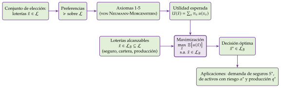
Fuente: elaboración propia, con el mismo diseño que el esquema de los ingredientes de la teoría del consumidor [ver tema 3.A.8].
En el cante de I.1 (8′): el conjunto de elección con el árbol de una lotería (gráfico 2), los 5 axiomas nombrados, con la independencia explicada, y el teorema de la utilidad esperada como función clave, que se queda en una esquina de la pizarra hasta el final, con la frase «esperanza de la utilidad y no utilidad de la esperanza» (3′30″); después, el gráfico de la actitud ante el riesgo (gráfico 4) con el equivalente cierto, la prima de riesgo y los coeficientes de Arrow-Pratt, la CRRA, el teorema de Pratt en una frase y la dominancia de primer y segundo orden con su caracterización por las funciones de distribución (4′30″). Los 4 casos de la completitud, el símplex, el caso continuo, la aproximación de la prima, las familias CARA y HARA, la prudencia y la media-varianza son de profundización.
I.1.1. Ingredientes y obtención de la función de utilidad esperada
a) Idea
El objetivo es convertir una relación de preferencia sobre loterías, difícil de manejar, en una función de variable real con una forma concreta, para poder plantear y resolver problemas de optimización con las herramientas del cálculo. En certidumbre basta con que la función exista; aquí se le pide además una forma: la de una media ponderada de utilidades.
b) Modelo
i) Supuestos
Conjunto de elección: las loterías.
Hay \(S\) estados de la naturaleza, \(s=1,\dots,S\), mutuamente excluyentes (si ocurre uno, no ocurre otro) y colectivamente exhaustivos (cubren todas las posibilidades): ocurre uno y solo uno. En cada estado el consumidor obtiene un resultado \(x_s\), que tomaremos monetario, su riqueza.3
Una lotería es una distribución de probabilidad sobre los resultados: \[\tilde{x}\equiv(x_1,\dots,x_S;\ \pi_1,\dots,\pi_S),\qquad \pi_s\geq 0,\qquad \sum_{s=1}^{S}\pi_s=1 .\] Puede ser:
simple, si sus resultados son ciertos (gráfico 2, izquierda);
compuesta, si sus resultados son, a su vez, loterías. La lotería \(\tau\tilde{x}^1+(1-\tau)\tilde{x}^2\), con \(\tau\in[0,1]\), da la lotería \(\tilde{x}^1\) con probabilidad \(\tau\) y la \(\tilde{x}^2\) con probabilidad \(1-\tau\). Toda lotería compuesta se reduce a una simple, multiplicando las probabilidades de cada rama (gráfico 2, derecha);4
degenerada, si da un resultado con probabilidad 1: la certidumbre es un caso particular.
Con \(S\) resultados, cada lotería es un punto del símplex de dimensión \(S-1\); con 3 resultados, un triángulo (gráfico 3).5
El conjunto de elección \(\mathcal{L}\) es el de todas las loterías simples sobre los resultados posibles. La idea clave: el consumidor no elige resultados, que son aleatorios, sino loterías, es decir, distribuciones de probabilidad sobre ellos. Una lotería no da utilidad por sí misma, sino por los resultados a los que da acceso.
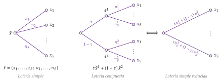
Fuente: elaboración propia a partir de Maté García y Pérez Domínguez (2007).
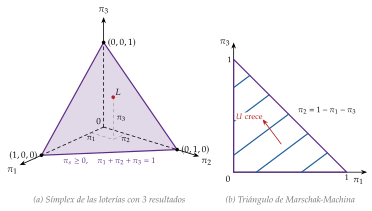
Fuente: elaboración propia a partir de Mas-Colell, Whinston y Green (1995, párr. 6.B) y Machina (1987).
Preferencias sobre loterías y sus axiomas. Sobre \(\mathcal{L}\) se define la relación binaria \(\succcurlyeq\), «al menos tan preferida como», de la que salen la preferencia estricta, \(\succ\), y la indiferencia, \(\sim\), como en certidumbre [ver tema 3.A.8]. Se le exigen 5 axiomas, en 2 grupos:
Axiomas de preorden completo:
Completitud: para todo \(\tilde{x}^0,\tilde{x}^1\in\mathcal{L}\), \(\tilde{x}^0\succcurlyeq\tilde{x}^1\) o \(\tilde{x}^1\succcurlyeq\tilde{x}^0\) (o ambas): el consumidor puede comparar 2 loterías cualesquiera.6
Reflexividad: \(\tilde{x}^0\succcurlyeq\tilde{x}^0\) para toda \(\tilde{x}^0\in\mathcal{L}\): toda lotería es al menos tan buena como sí misma (se deduce de la completitud). La indiferencia es reflexiva; la preferencia estricta, no.
Transitividad: para todo \(\tilde{x}^0,\tilde{x}^1,\tilde{x}^2\in\mathcal{L}\), si \(\tilde{x}^0\succcurlyeq\tilde{x}^1\) y \(\tilde{x}^1\succcurlyeq\tilde{x}^2\), entonces \(\tilde{x}^0\succcurlyeq\tilde{x}^2\). También la cumplen \(\succ\) y \(\sim\).
Los 3 hacen de \(\succcurlyeq\) un preorden completo: todas las loterías (completitud) se clasifican en clases de indiferencia (reflexividad), y cada una pertenece a una y solo una (transitividad).7
Axiomas de regularidad:
Continuidad: para todo \(\tilde{x}^1,\tilde{x}^2,\tilde{x}^3\in\mathcal{L}\) con \(\tilde{x}^1\succcurlyeq\tilde{x}^2\succcurlyeq\tilde{x}^3\), existe \(\tau\in[0,1]\) tal que \(\tau\tilde{x}^1+(1-\tau)\tilde{x}^3\sim\tilde{x}^2\). Pequeños cambios en las probabilidades no invierten el orden entre 2 loterías: no hay resultados infinitamente buenos ni infinitamente malos.8 Con los 3 anteriores, garantiza que existe una función de utilidad \(U:\mathcal{L}\rightarrow\mathbb{R}\) que representa las preferencias, \(\tilde{x}^1\succcurlyeq\tilde{x}^2\iff U(\tilde{x}^1)\geq U(\tilde{x}^2)\), como en certidumbre.
Axioma de independencia: para todo \(\tilde{x}^1,\tilde{x}^2,\tilde{x}^3\in\mathcal{L}\) y todo \(\tau\in(0,1)\), \[\tilde{x}^1\succcurlyeq\tilde{x}^2\iff\tau\tilde{x}^1+(1-\tau)\tilde{x}^3\ \succcurlyeq\ \tau\tilde{x}^2+(1-\tau)\tilde{x}^3 .\] Mezclar 2 loterías con una tercera, en la misma proporción, no cambia el orden entre ellas. Es el axioma propio de la elección con riesgo y no tiene equivalente en la teoría del consumidor: allí 2 bienes se consumen juntos y pueden complementarse; aquí solo ocurre una de las ramas de la lotería, así que lo que pase en la rama común, \(\tilde{x}^3\), no debería afectar a la comparación.9
ii) Desarrollo
La continuidad basta para que exista una función de utilidad; la independencia es la que le da la forma de utilidad esperada. Es el teorema de la utilidad esperada de von Neumann y Morgenstern (1944): si \(\succcurlyeq\) sobre \(\mathcal{L}\) cumple los 5 axiomas, existe una función \(u(\cdot)\) que asigna un número a cada resultado cierto tal que las loterías se ordenan por
\[U(\tilde{x})=\mathbb{E}\big[u(\tilde{x})\big]=\sum_{s=1}^{S}\pi_s\,u(x_s)\tag{1}\]
es decir, \(\tilde{x}^1\succcurlyeq\tilde{x}^2\iff U(\tilde{x}^1)\geq U(\tilde{x}^2)\).
Interpretación: el consumidor elige como si asignara una utilidad a cada resultado cierto, la utilidad de Bernoulli \(u(\cdot)\) (en la terminología de Mas-Colell, Whinston y Green (1995)), y valorara cada lotería por la media de esas utilidades ponderada por las probabilidades: la utilidad esperada o de von Neumann-Morgenstern, \(U(\tilde{x})\). La demostración (en el apéndice de la 2.ª edición, de 1947) construye \(u\) con loterías: con el mejor y el peor resultado, la utilidad de cada resultado intermedio es la probabilidad \(\tau\) que hace al consumidor indiferente entre ese resultado seguro y la lotería que da el mejor con probabilidad \(\tau\) y el peor con \(1-\tau\).
iii) Implicaciones
Propiedades de la función de utilidad esperada:
preserva el orden de las preferencias sobre loterías;
es lineal en las probabilidades (consecuencia directa de la independencia) y aditivamente separable entre estados: lo que ocurre en un estado no altera cómo se valora lo que ocurre en otro;
\(u(\cdot)\) es única salvo transformaciones afines positivas: \(a\,u(\cdot)+b\), con \(a>0\), representa las mismas preferencias, pero una transformación creciente no afín, no. Por eso se dice que la utilidad de von Neumann-Morgenstern es cardinal: las diferencias de utilidad tienen significado, aunque no permite comparaciones entre personas (anexo A);
\(u(\cdot)\) no es un supuesto, sino un resultado del teorema: se deduce de las preferencias sobre loterías.
Resultados continuos. Si el resultado es una variable continua con función de distribución \(F(x)\equiv\Pr(\tilde{x}\leq x)\), la suma de (1) se convierte en una integral de Riemann-Stieltjes y \(u\) en una función de variable real: \[U(\tilde{x})=\int u(x)\,dF(x)\qquad\Big(=\int u(x)\,f(x)\,dx\ \text{ si } F \text{ tiene densidad } f\Big).\]
La idea central: el consumidor no se guía por la utilidad de la esperanza, \(u\big(\mathbb{E}[\tilde{x}]\big)\), sino por la esperanza de la utilidad, \(\mathbb{E}\big[u(\tilde{x})\big]\). Por eso la teoría se llama así, y es la solución de Bernoulli (1738) a la paradoja de San Petersburgo: un juego de ganancia esperada infinita por el que nadie pagaría más que unas pocas monedas; con \(u(x)=\ln x\), su equivalente cierto es de solo 4 ducados (anexo B).
Conviene decir en voz alta que se pasa al caso continuo, porque lo que sigue (equivalente cierto, coeficientes de aversión, dominancia) se escribe con \(F(x)\). San Petersburgo se cuenta en una frase: es la forma más rápida de decir «esperanza de la utilidad y no utilidad de la esperanza», que es la idea que el tribunal espera oír.
c) Valoración
El teorema da un fundamento axiomático, y por tanto contrastable, a la forma más sencilla de valorar el riesgo. De los 5 axiomas, el discutido es el de independencia: los experimentos muestran que muchas personas lo violan de forma sistemática (II.1).
I.1.2. Componentes de la función de utilidad esperada
Una vez obtenida la utilidad esperada, pasamos a estudiar sus 2 componentes:
uno subjetivo, la utilidad de Bernoulli \(u(x)\), propia de cada consumidor: de ella sale su actitud ante el riesgo;
otro objetivo, la distribución de probabilidad \(F(x)\), que viene dada y es la misma para todos: de ella sale la posibilidad de comparar loterías sin conocer \(u\).
Se supone que \(u\) es continua y creciente, \(u'(x)>0\): más riqueza es mejor (el consumidor es amante de la riqueza). Cuando hace falta, es 2 o 3 veces derivable. Gran parte del poder analítico de la teoría reposa en su curvatura.
Utilidad de Bernoulli: actitud ante el riesgo
Para calificar la actitud ante el riesgo basta comparar la utilidad esperada de una lotería con la utilidad de su valor esperado. Un consumidor es:
averso al riesgo si, ante cualquier lotería no degenerada, prefiere recibir su valor esperado con certeza: \(u\big(\mathbb{E}[\tilde{x}]\big)>\mathbb{E}\big[u(\tilde{x})\big]\). Por la desigualdad de Jensen, eso ocurre si y solo si \(u\) es estrictamente cóncava, \(u''<0\);
neutral al riesgo si \(u\big(\mathbb{E}[\tilde{x}]\big)=\mathbb{E}\big[u(\tilde{x})\big]\): \(u\) es lineal y solo le importa la esperanza;
amante del riesgo si \(u\big(\mathbb{E}[\tilde{x}]\big)<\mathbb{E}\big[u(\tilde{x})\big]\): \(u\) es estrictamente convexa.10
Intuición: para el averso, la utilidad marginal de la riqueza es decreciente. Ante una lotería que sube o baja la riqueza en la misma cantidad, el euro perdido le duele más de lo que le alegra el euro ganado.
Utilidad de Bernoulli: equivalente cierto y prima de riesgo
El equivalente cierto \(\xi\) de una lotería es la cantidad cierta que el consumidor valora igual que la lotería: \[u(\xi)=\mathbb{E}\big[u(\tilde{x})\big]=\int u(x)\,dF(x).\] El consumidor es averso si y solo si \(\xi<\mathbb{E}[\tilde{x}]\) para toda lotería no degenerada; neutral si \(\xi=\mathbb{E}[\tilde{x}]\), y amante si \(\xi>\mathbb{E}[\tilde{x}]\). Es una forma equivalente de decir lo mismo que la concavidad.
La prima de riesgo es la diferencia entre el valor esperado y el equivalente cierto: \[\rho\equiv\mathbb{E}[\tilde{x}]-\xi .\] Mide en euros lo que el consumidor sacrificaría, en valor esperado, por librarse del riesgo; dicho al revés, la rentabilidad esperada adicional que exige para asumirlo, que es como se usa en la teoría de carteras. Es positiva si y solo si el consumidor es averso.
Prima justa y prima máxima: un ejemplo con un seguro (gráfico 4). Con \(u(x)=\sqrt{x}\) y una riqueza de 64, el consumidor pierde 48 con probabilidad \(1/2\). Su riqueza es la lotería \((64,16;\ \tfrac12,\tfrac12)\):
\(\mathbb{E}[\tilde{x}]=40\) y \(\mathbb{E}[u(\tilde{x})]=\tfrac12\cdot 8+\tfrac12\cdot 4=6\), luego \(\xi=6^2=36\) y la prima de riesgo es \(\rho=40-36=4\);
la prima actuarialmente justa es la pérdida esperada, \(\tfrac12\cdot 48=24\): una aseguradora neutral al riesgo no gana ni pierde cobrándola;
la prima máxima que pagaría por un seguro completo es la que le deja indiferente con no asegurarse, \(64-\xi=28\): la prima justa más la prima de riesgo, \(24+4\). Ese margen de 4 es lo que hace posible el negocio asegurador entre un consumidor averso y una aseguradora que diversifica.
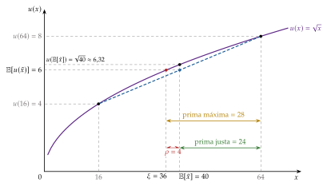
Fuente: elaboración propia a partir de Mas-Colell, Whinston y Green (1995, párr. 6.C).
Utilidad de Bernoulli: medidas de la aversión al riesgo
La concavidad dice si el consumidor es averso, pero no cuánto. Para medirlo, Pratt (1964) y Arrow (1965) proponen la curvatura de \(u\) normalizada por su pendiente:
coeficiente de aversión absoluta al riesgo: \[\tag{2} r_A(x)\equiv-\frac{u''(x)}{u'(x)} ;\]
coeficiente de aversión relativa al riesgo, que mide la aversión ante ganancias y pérdidas proporcionales a la riqueza: \[\tag{3} r_R(x)\equiv x\,r_A(x)=-\frac{x\,u''(x)}{u'(x)} .\] Es la elasticidad de la utilidad marginal respecto a la riqueza, cambiada de signo, y no depende de las unidades en que se mida la riqueza.
Por qué esa forma: \(u''\) sola no sirve, porque cambia si se multiplica \(u\) por una constante, y \(u\) solo está definida salvo transformaciones afines positivas; al dividir por \(u'\), la medida es la misma para \(u\) y para \(a\,u+b\) (\(a>0\)). El signo menos la hace positiva para el averso.
Por qué mide la aversión: para un riesgo pequeño de media cero y varianza \(\sigma^2\) en torno a una riqueza \(\overline{W}\), la prima de riesgo es aproximadamente proporcional a \(r_A\) y a la varianza (anexo F): \[\tag{4} \rho\ \approx\ \tfrac{1}{2}\,\sigma^2\,r_A\big(\overline{W}\big).\] En el ejemplo anterior (\(r_A(x)=1/(2x)\), \(\sigma=24\), media 40), la aproximación da \(\tfrac12\cdot 576/80=3{,}6\), frente a la prima exacta de 4: el riesgo no es pequeño.
Comparación entre consumidores (teorema de Pratt): para 2 consumidores con utilidades \(u_1\) y \(u_2\) son equivalentes (Pratt, 1964):
\(r_A^1(x)\geq r_A^2(x)\) para todo \(x\);
\(u_1\) es una transformación cóncava de \(u_2\): \(u_1=\psi(u_2)\) con \(\psi\) creciente y cóncava;
el primero exige una prima mayor por cualquier lotería: \(\rho_1\geq\rho_2\), o \(\xi_1\leq\xi_2\);
toda lotería que el primero prefiere a una cantidad cierta, la prefiere también el segundo.
Así, «más averso» tiene un sentido único y observable: las medidas locales (\(r_A\)), globales (\(\rho\)) y de comportamiento (qué apuestas acepta) ordenan igual a los consumidores. Las estimaciones suelen dar una aversión relativa moderada, en torno a 1 (Chetty, 2006); en el laboratorio, los sujetos son aversos incluso con premios pequeños, y más cuanto mayor es el premio real (Holt y Laury, 2002).
Utilidad de Bernoulli: aversión al riesgo y riqueza
¿Acepta más riesgo quien es más rico? Según cómo varíen los coeficientes con la riqueza, la aversión absoluta es constante, decreciente o creciente (CARA, DARA e IARA, por sus siglas en inglés), y lo mismo la relativa (CRRA, DRRA e IRRA). La evidencia y la intuición apoyan la DARA: quien es más rico asume más riesgo en euros. Sobre la relativa no hay acuerdo; la constante es el supuesto habitual. Las 3 familias más usadas (tabla 1):
CARA (exponencial), \(u(x)=-e^{-ax}\) con \(a>0\): \(r_A=a\), de modo que la prima que exige por un riesgo no depende de su riqueza.
CRRA (isoelástica), la misma de la teoría del consumidor [ver tema 3.A.8]: \[\tag{5} u(x)=\begin{cases}\dfrac{x^{1-\theta}-1}{1-\theta} & \text{si } \theta\geq 0,\ \theta\neq 1,\\[6pt] \ln x & \text{si } \theta=1,\end{cases}\] con \(r_R=\theta\) constante y \(r_A=\theta/x\) decreciente (DARA) (anexo F). Es la más usada en macroeconomía y finanzas: con ella, las decisiones de cartera y de ahorro en proporción a la riqueza no dependen del nivel de riqueza, lo que es compatible con el crecimiento equilibrado. Con utilidad separable en el tiempo, su elasticidad de sustitución intertemporal es \(\mathrm{ESI}=1/\theta\) [ver tema 3.A.29]11: un mismo parámetro mide 2 cosas distintas, la aversión al riesgo entre estados y la resistencia a sustituir consumo entre periodos.12
Cuadrática, \(u(x)=x-\tfrac{b}{2}x^2\) con \(x<1/b\): es cómoda, porque la utilidad esperada solo depende de la media y la varianza (anexo E), pero tiene aversión absoluta creciente (IARA), lo que contradice la evidencia, y deja de ser creciente para \(x>1/b\).
Las 3 son casos de la familia HARA (hyperbolic absolute risk aversion), cuya tolerancia al riesgo, \(1/r_A(x)\), es lineal en la riqueza: \(1/r_A(x)=\eta_0+\eta_1x\). Es CARA si \(\eta_1=0\); CRRA si \(\eta_0=0\) y \(\eta_1=1/\theta\), y cuadrática si \(\eta_1=-1\).
| Función | \(u(x)\) | \(r_A(x)\) | \(r_R(x)\) | Tipo |
|---|---|---|---|---|
| CARA (exponencial) |
\(-e^{-ax}\), \(a>0\) | \(a\) | \(a\,x\) | CARA, IRRA |
| CRRA (isoelástica) |
\(\dfrac{x^{1-\theta}-1}{1-\theta}\) (\(\ln x\) si \(\theta=1\)) |
\(\theta/x\) | \(\theta\) | DARA, CRRA |
| Cuadrática | \(x-\tfrac{b}{2}x^2\), \(x<1/b\) | \(\dfrac{b}{1-bx}\) | \(\dfrac{bx}{1-bx}\) | IARA, IRRA |
Fuente: elaboración propia a partir de Gollier (2001).
Utilidad de Bernoulli: prudencia y ahorro precautorio
No se canta: basta una frase si sale el ahorro. La aversión al riesgo (\(u''<0\)) dice si el consumidor pagaría por librarse de un riesgo; el ahorro precautorio depende de otra cosa, la prudencia (\(u'''>0\)).
La aversión al riesgo dice si el consumidor pagaría por eliminar un riesgo; la prudencia dice cómo reacciona ante él: si ahorra más cuando su renta futura se vuelve incierta. Depende de la tercera derivada de \(u\).
Modelo (Leland, 1968; Sandmo, 1970): el consumidor reparte una riqueza \(\overline{W}\) entre consumir hoy y ahorrar \(s\) para mañana, cuando recibirá además una renta incierta \(\tilde{y}\) (con tipo de interés y descuento nulos, para simplificar): \[\begin{array}{rl}\displaystyle \max_{s} & \displaystyle u(\overline{W}-s)+\mathbb{E}\big[u(s+\tilde{y})\big]\end{array}\qquad\Longrightarrow\qquad u'(\overline{W}-s^*)=\mathbb{E}\big[u'(s^*+\tilde{y})\big].\] Si \(u'\) es convexa (\(u'''>0\)), por la desigualdad de Jensen, \(\mathbb{E}[u'(s+\tilde{y})]>u'(s+\mathbb{E}[\tilde{y}])\): el riesgo eleva la utilidad marginal esperada de mañana y el consumidor ahorra más que si recibiera \(\mathbb{E}[\tilde{y}]\) con certeza. Es el ahorro precautorio.
La condición es \(u'''>0\), y no la aversión al riesgo: es necesaria y suficiente para que cualquier riesgo de media cero aumente el ahorro, sea cual sea el signo de \(u''\). Kimball (1990) la mide con el coeficiente de prudencia absoluta, \(-u'''(x)/u''(x)\), por analogía con \(r_A\).
Con la CRRA, \(u'''=\theta(\theta+1)x^{-\theta-2}>0\) y la prudencia es \((\theta+1)/x\): hay ahorro precautorio.
Con la cuadrática, \(u'''=0\): no lo hay, aunque el consumidor sea averso (tabla 2). Por eso, con utilidad cuadrática, el consumo de Hall sigue un paseo aleatorio sin motivo precaución [ver tema 3.A.33].
La aversión absoluta es decreciente (DARA) si y solo si la prudencia es mayor que la aversión, lo que exige \(u'''>0\) (anexo F): la DARA, que es la hipótesis más aceptada, implica ahorro precautorio.
Implicación macroeconómica: un aumento de la incertidumbre eleva el ahorro precautorio; en equilibrio general baja el tipo de interés real, lo que empuja el consumo en sentido contrario, así que el efecto final sobre la actividad es ambiguo (Fernández-Villaverde y Guerrón-Quintana, 2020).
| Cuadrática | CRRA | |
|---|---|---|
| \(u(x)\) | \(x-\tfrac{b}{2}x^2\) | \(\dfrac{x^{1-\theta}-1}{1-\theta}\) |
| \(u'(x)\) | \(1-bx\) | \(x^{-\theta}\) |
| \(u''(x)\) | \(-b<0\) (averso) | \(-\theta x^{-\theta-1}<0\) (averso) |
| \(u'''(x)\) | \(0\) (sin prudencia) | \(\theta(\theta+1)x^{-\theta-2}>0\) (prudente) |
Fuente: elaboración propia a partir de Fernández-Villaverde y Guerrón-Quintana (2020, tabla 1), con la notación del temario (\(\theta\) en lugar de \(\sigma\)).
Distribución de probabilidad: dominancia estocástica
Hasta aquí hemos visto si una lotería es preferida a otra por un consumidor concreto. Pero ¿hay loterías que todos prefieren, sea cual sea su \(u\)? La dominancia estocástica responde con condiciones sobre las distribuciones \(F\) y \(G\), que son objetivas (Hadar y Russell, 1969; Hanoch y Levy, 1969).
Dominancia estocástica de primer orden: \(F\) domina a \(G\) si la prefiere todo consumidor que prefiere más riqueza a menos, sea cual sea su actitud ante el riesgo: \[\begin{aligned} &\int u(x)\,dF(x)\geq\int u(x)\,dG(x)\ \ \text{para toda } u \text{ no decreciente}\\ \iff\ &F(x)\leq G(x)\ \ \text{para todo } x . \end{aligned}\] Para cualquier umbral \(x\), \(F\) da menos probabilidad que \(G\) de quedarse por debajo: su función de distribución está siempre por debajo (gráfico 5, izquierda). Implica \(\mathbb{E}_F[\tilde{x}]\geq\mathbb{E}_G[\tilde{x}]\), pero no al revés.
Dominancia estocástica de segundo orden: compara el riesgo de 2 loterías. Para aislarlo, se comparan loterías con la misma media (un averso puede aceptar más riesgo si la ganancia esperada es mayor). Con la misma media, \(F\) domina a \(G\) si la prefiere todo consumidor averso: \[\begin{aligned} &\int u(x)\,dF(x)\geq\int u(x)\,dG(x)\ \ \text{para toda } u \text{ cóncava}\\ \iff\ &\int_{-\infty}^{x}F(t)\,dt\leq\int_{-\infty}^{x}G(t)\,dt\ \ \text{para todo } x . \end{aligned}\] Equivale a que \(G\) sea una dispersión que conserva la media de \(F\): se obtiene de \(F\) quitando probabilidad del centro y llevándola a las colas sin cambiar la media (gráfico 5, derecha). Es la definición rigurosa de «más arriesgada», más general que «con más varianza» (Rothschild y Stiglitz, 1970).
Valoración: son criterios exigentes, que solo dan un orden parcial (muchos pares de loterías no se pueden ordenar así) y no dicen cuánto mejor es una lotería que otra.
Por eso se usa a menudo el criterio de media y varianza, que resume cada lotería en 2 números: la media como un «bien» y la varianza como un «mal». Pierde información (Bikhchandani, Hirshleifer y Riley, 2013), y solo es coherente con la utilidad esperada si la utilidad es cuadrática o los rendimientos son normales (o, en general, elípticos), no por el teorema central del límite (Tobin, 1958; Chamberlain, 1983).13
Es la base de la teoría de carteras de Markowitz, Tobin y Sharpe (anexo E) [ver tema 3.B.23].
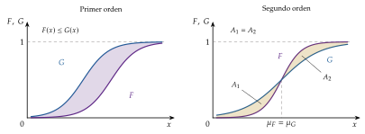
Fuente: elaboración propia a partir de Mas-Colell, Whinston y Green (1995, párr. 6.D).
La utilidad esperada separa lo subjetivo de lo objetivo: la curvatura de \(u\) mide la actitud ante el riesgo (cuanto más cóncava, mayor la prima que se paga por librarse de él), y la dominancia estocástica permite ordenar algunas loterías para todos los consumidores a la vez.
I.2. Aplicaciones de la teoría de la utilidad esperada
Con la utilidad esperada y la medida de la aversión ya podemos derivar demandas. Las decisiones con riesgo más importantes del consumidor son financieras: comprar activos, que son promesas de pagos (casi siempre inciertos) que se diferencian por el estado de la naturaleza en que pagan. Un seguro paga en el estado malo; una acción, más en el bueno.
Veremos 2 aplicaciones: la decisión de aseguramiento, que da la demanda de seguros, y la decisión de producción de una empresa aversa al riesgo. La decisión de cartera, que da la demanda de un activo con riesgo, se resume en una frase y se desarrolla en el anexo C.
En el cante de I.2 (4′) se desarrolla solo la demanda de seguros, que es la más intuitiva y la base del modelo de Rothschild y Stiglitz con información asimétrica [ver tema 3.A.13]: supuestos, recta de aseguramiento, problema y condición de tangencia, seguro completo con prima justa y parcial con prima recargada, sobre el gráfico de la demanda de seguros, que se construye paso a paso (gráficos 6 a 9); la evidencia y la valoración, en una frase cada una. La demanda de un activo con riesgo y la empresa aversa al riesgo se mencionan en una frase cada una. La tabla de casos es de profundización.
I.2.1. Decisión de aseguramiento: demanda de seguros (Mossin, 1968)
a) Idea
¿Cuánto seguro compra un consumidor averso que puede sufrir una pérdida? Es la aplicación más sencilla de la utilidad esperada y la base de toda la economía del seguro (Mossin, 1968; Smith, 1968). El consumidor busca reducir su exposición al riesgo trasladando riqueza del estado bueno al malo.
b) Modelo
i) Supuestos
Un consumidor tiene una riqueza inicial \(\overline{W}\). Con probabilidad \(\pi\) sufre un accidente y pierde \(L\); con probabilidad \(1-\pi\) no le ocurre nada. Sin seguro, su riqueza es la lotería \((\overline{W},\,\overline{W}-L;\ 1-\pi,\,\pi)\): el punto \(A=(\overline{W},\,\overline{W}-L)\) del plano \((x_1,x_2)\), con la riqueza sin accidente, \(x_1\), en abscisas y con accidente, \(x_2\), en ordenadas (gráfico 6). La bisectriz es la línea de certeza: en ella la riqueza es la misma ocurra o no el accidente.
Su utilidad de Bernoulli es continua, creciente y estrictamente cóncava: es averso al riesgo. Su utilidad esperada es \(U=(1-\pi)\,u(x_1)+\pi\,u(x_2)\), y sus curvas de indiferencia en el plano \((x_1,x_2)\) son decrecientes, convexas (por la aversión) y representan más utilidad cuanto más se alejan del origen.14
Puede comprar una cobertura de \(S\) euros, que cobra si hay accidente, pagando una prima de \(\gamma\) euros por euro asegurado (\(\gamma S\) en total, haya o no accidente). La cobertura no puede superar la pérdida, \(0\leq S\leq L\) (el seguro no puede enriquecer al asegurado).
Información simétrica: la aseguradora conoce \(\pi\) y observa si hay accidente.
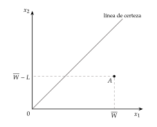
Fuente: elaboración propia a partir de Mas-Colell, Whinston y Green (1995, párr. 6.C). Primer paso del gráfico 9.
ii) Desarrollo
Con una cobertura \(S\), la riqueza en cada estado es \[\tag{6} \begin{aligned} x_1&=\overline{W}-\gamma S &&\text{(sin accidente, con probabilidad } 1-\pi),\\ x_2&=\overline{W}-L+(1-\gamma)\,S &&\text{(con accidente, con probabilidad } \pi). \end{aligned}\] Despejando \(S\) en la primera y sustituyendo en la segunda se obtiene la recta de aseguramiento, que pasa por el punto sin seguro, \(A\), y es la restricción presupuestaria del consumidor entre estados:15 \[\tag{7} x_2=\frac{\overline{W}}{\gamma}-L-\frac{1-\gamma}{\gamma}\,x_1 .\] Su pendiente, \(-(1-\gamma)/\gamma\), es el precio relativo de trasladar riqueza entre estados: renunciar a \(\gamma\) euros en el estado sin accidente da \(1-\gamma\) euros netos en el estado con accidente. Al aumentar la cobertura desde \(S=0\) (punto \(A\)) hasta \(S=L\), el consumidor recorre la recta hacia arriba y a la izquierda, hasta la línea de certeza (gráfico 7).
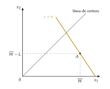
Fuente: elaboración propia a partir de Mas-Colell, Whinston y Green (1995, párr. 6.C). Segundo paso del gráfico 9.
El consumidor elige la cobertura que maximiza su utilidad esperada:
\[\begin{array}{rl}\displaystyle \max_{S} & \displaystyle (1-\pi)\,u\big(\overline{W}-\gamma S\big)+\pi\,u\big(\overline{W}-L+(1-\gamma)S\big) \\ \text{s.a.} & 0\leq S\leq L\end{array}\tag{8}\]
Con solución interior, la condición de primer orden iguala la pendiente de la curva de indiferencia y la de la recta de aseguramiento (anexo F): \[\tag{9} \mathrm{RMSE}\equiv\frac{(1-\pi)\,u'(x_1)}{\pi\,u'(x_2)}=\frac{1-\gamma}{\gamma} .\] La relación marginal de sustitución estocástica, o entre estados (RMSE), es el valor absoluto de la pendiente de la curva de indiferencia en el plano \((x_1,x_2)\): cuánta riqueza sin accidente está dispuesto a dar el consumidor por un euro más con accidente. En la línea de certeza (\(x_1=x_2\)) vale \((1-\pi)/\pi\), el cociente de probabilidades, sea cual sea \(u\). La condición de segundo orden se cumple por la concavidad de \(u\).
iii) Implicaciones
Prima justa. Si las aseguradoras son neutrales al riesgo y compiten con libre entrada, su beneficio esperado por póliza es nulo: \((1-\pi)\,\gamma S+\pi\,(\gamma S-S)=(\gamma-\pi)\,S=0\), luego \(\gamma=\pi\). Es la prima actuarialmente justa, y con ella la recta de aseguramiento tiene la misma pendiente que las curvas de indiferencia en la línea de certeza.
Teorema de Mossin, primera parte: con prima justa, (9) da \(u'(x_1)=u'(x_2)\), luego \(x_1=x_2\) y \(S^*=L\): el consumidor averso se asegura completamente. Gráficamente, la curva de indiferencia más alta que alcanza es tangente a la recta de aseguramiento justo en la línea de certeza, en el punto \(E\) (gráfico 8), donde las 2 pendientes valen \((1-\pi)/\pi\). La aseguradora tiene beneficio nulo.
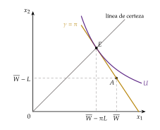
Fuente: elaboración propia a partir de Mas-Colell, Whinston y Green (1995, párr. 6.C). Tercer paso del gráfico 9.
Teorema de Mossin, segunda parte: con prima recargada (\(\gamma>\pi\)), la recta de aseguramiento, que sigue pasando por \(A\), es más plana, \((1-\gamma)/\gamma<(1-\pi)/\pi\); luego \(u'(x_1)<u'(x_2)\), \(x_1>x_2\) y \(S^*<L\): seguro parcial, como las franquicias que se observan. La nueva curva de indiferencia es tangente a la recta por debajo de la línea de certeza, en el punto \(E'\), entre \(A\) y la línea de certeza (gráfico 9).
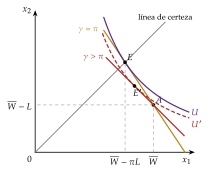
Fuente: elaboración propia a partir de Mossin (1968), Mas-Colell, Whinston y Green (1995, párr. 6.C) y Rodríguez López (2017).
Estática comparativa: la cobertura demandada aumenta con la aversión al riesgo, con la probabilidad de accidente y con la cuantía de la pérdida, y disminuye con la prima. Con prima recargada y aversión absoluta decreciente (DARA), el seguro es un bien inferior: quien es más rico se asegura menos (Mossin, 1968).
c) Extensiones: primas distintas de la justa y otras actitudes ante el riesgo
La prima puede ser recargada (\(\gamma>\pi\)), que es lo habitual, porque la aseguradora cubre sus gastos y busca un beneficio (con competencia imperfecta, mayor), o favorable (\(\gamma<\pi\)), que solo se da si alguien la subvenciona: entonces la aseguradora pierde en promedio. El resultado depende también de la actitud ante el riesgo (tabla 3):
el neutral solo mira la riqueza esperada, \(\overline{W}-\pi L+(\pi-\gamma)\,S\), que es lineal en \(S\): se asegura del todo si la prima es favorable, nada si es recargada y le da igual cuánto si es justa;
el amante del riesgo tiene una utilidad esperada convexa en \(S\), así que elige un extremo: con prima justa o recargada no se asegura; con prima favorable, se asegura del todo solo si la prima es bastante menor que la justa;
el averso con prima favorable querría sobreasegurarse (\(S>L\), más riqueza con accidente que sin él); como no puede, se asegura del todo.
d) Evidencia empírica
La mayoría de las pólizas tienen franquicias o coberturas parciales, como predice el modelo con primas recargadas. Pero los consumidores pagan demasiado por evitar riesgos pequeños: en el seguro del hogar eligen franquicias bajas a precios que solo una aversión al riesgo inverosímil justificaría con utilidad esperada (Sydnor, 2010). Es una de las anomalías que estudiaremos en el bloque II.
e) Valoración
El modelo explica con 2 supuestos (aversión y prima justa) por qué existen los seguros y cuánto se demanda, y da la referencia de eficiencia, el seguro completo.16
Pero supone información simétrica. Si la aseguradora no conoce el riesgo de cada asegurado aparece la selección adversa (ex ante), y si no observa su cuidado, el riesgo moral (ex post): el modelo de Rothschild y Stiglitz (1976) parte de este mismo gráfico [ver tema 3.A.13]. Supone también que el accidente no cambia cómo se valora la riqueza, lo que no siempre es cierto (I.3).
El problema inverso del seguro es la decisión de cartera: el consumidor parte de la certeza (todo en un activo seguro) y hay que pagarle, en rentabilidad esperada, para que se aleje de ella. Su resultado central, de Arrow (1965), es que todo consumidor averso compra algo de un activo con riesgo si su rentabilidad esperada supera a la del activo seguro, y más cuanto más rico es si su aversión absoluta es decreciente (anexo C).
| Prima favorable (\(\gamma<\pi\)) |
Prima justa (\(\gamma=\pi\)) |
Prima recargada (\(\gamma>\pi\)) |
|
|---|---|---|---|
| Averso | Completo, \(S^*=L\) (se sobreaseguraría, en \(E^*\), si pudiera) 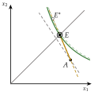 |
Completo, \(S^*=L\) (teorema de Mossin) 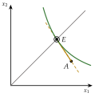 |
Parcial, \(S^*<L\) (nulo si el recargo es grande) 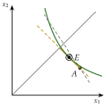 |
| Neutral | Completo, \(S^*=L\) 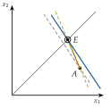 |
Indiferente, \(S^*\in[0,L]\) (todo el tramo de \(A\) a \(E\)) 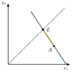 |
Ninguno, \(S^*=0\) 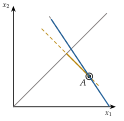 |
| Amante | Ninguno, \(S^*=0\), si \(\gamma\) es algo menor que \(\pi\) 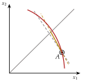 Completo, \(S^*=L\), si \(\gamma\) es bastante menor que \(\pi\) 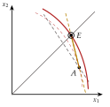 |
Ninguno, \(S^*=0\) 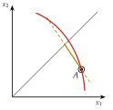 |
Ninguno, \(S^*=0\) 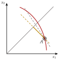 |
Fuente: elaboración propia a partir de Mossin (1968), Mas-Colell, Whinston y Green (1995, párr. 6.C) y Varian (1992, cap. 11). Cada gráfico tiene los ejes del gráfico 9: la riqueza sin accidente, \(x_1\), en abscisas, y con accidente, \(x_2\), en ordenadas; en gris, la línea de certeza; en dorado, la recta de aseguramiento, con trazo grueso en el tramo posible, de \(A\) (\(S=0\)) a la línea de certeza (\(S=L\)); en gris discontinuo, la recta con prima justa, de referencia; las curvas de indiferencia son convexas para el averso, rectas para el neutral y cóncavas para el amante, y el círculo marca el óptimo.
I.2.2. Decisión de producción de la empresa aversa al riesgo
a) Idea
El mismo análisis vale para la empresa si su propietario es averso y valora el beneficio con una utilidad \(u(\cdot)\) cóncava: ¿cuánto produce una empresa que no conoce el precio al que venderá?
No se canta: cumple la remisión de la teoría de la producción [ver tema 3.A.11]. Basta una frase: con un precio incierto, la empresa aversa al riesgo produce menos que la neutral.
b) Modelo
i) Supuestos
Una empresa competitiva no conoce el precio \(\tilde{p}\) cuando decide cuánto producir.
Sus costes \(C(q)\) son ciertos (a corto plazo y con los precios de los factores dados, \(C(\vec{w},q)\) con \(\vec{w}\) fijo [ver tema 3.A.12]), con coste marginal creciente.
Su propietario es averso al riesgo: \(u\) es creciente y estrictamente cóncava.
ii) Desarrollo
La empresa resuelve (Sandmo, 1971): \[\begin{array}{rl}\displaystyle \max_{q} & \displaystyle \mathbb{E}\Big[u\big(\tilde{p}\,q-C(q)\big)\Big] \\ \text{s.a.} & q\geq 0\end{array}\qquad\Longrightarrow\qquad\mathbb{E}\Big[u'(\tilde{B})\,\big(\tilde{p}-\mathrm{CMg}(q^*)\big)\Big]=0 ,\] con \(\tilde{B}=\tilde{p}\,q^*-C(q^*)\) el beneficio aleatorio.
Como \(\mathbb{E}[u'(\tilde{B})\,\tilde{p}]=\mathbb{E}[u'(\tilde{B})]\,\mathbb{E}[\tilde{p}]+\mathrm{Cov}\big(u'(\tilde{B}),\tilde{p}\big)\), y la covarianza es negativa (un precio alto da más beneficio y, con \(u\) cóncava, menos utilidad marginal), se obtiene \[\mathrm{CMg}(q^*)=\mathbb{E}[\tilde{p}]+\frac{\mathrm{Cov}\big(u'(\tilde{B}),\tilde{p}\big)}{\mathbb{E}[u'(\tilde{B})]}<\mathbb{E}[\tilde{p}] .\]
iii) Implicaciones
Con coste marginal creciente, la empresa aversa produce menos que la neutral, que iguala el coste marginal al precio esperado, como con certidumbre [ver tema 3.A.11].
c) Valoración
Por eso la empresa suele modelizarse neutral al riesgo: sus propietarios pueden diversificar, y un mercado de futuros que le permita fijar hoy el precio elimina la distorsión.
I.3. Extensiones
Una vez aplicada la utilidad esperada a la demanda, pasamos a 2 extensiones que flexibilizan el modelo básico sin abandonarlo.
En el cante de I.3 (1′): la utilidad dependiente del estado con el ejemplo de la salud y su consecuencia para el seguro, y la preferencia por el estado como el mismo gráfico del seguro con otros nombres (la recta de aseguramiento es la recta de precios de 2 bienes contingentes). No hace falta gráfico nuevo.
Utilidad dependiente del estado
Hasta ahora, un euro vale lo mismo en todos los estados: solo importa la riqueza, no por qué se tiene. Pero no se disfruta igual una renta con buena salud que enfermo, ni se valora igual el dinero tras perder un bien insustituible. Con utilidad dependiente del estado, \(u_s(x_s)\), la utilidad esperada es \(\sum_s\pi_s\,u_s(x_s)\); una versión ampliada del teorema de la utilidad esperada la fundamenta (Karni, 1985).
Consecuencia para los seguros: la RMSE pasa a ser \((1-\pi)\,u_1'(x_1)/\big(\pi\,u_2'(x_2)\big)\), y con prima justa la condición de primer orden ya no iguala las riquezas, sino las utilidades marginales: \(u_1'(x_1)=u_2'(x_2)\). Si el accidente reduce la utilidad marginal de la riqueza (porque se pierde algo que el dinero no repone, como la salud), al consumidor averso le conviene asegurarse menos que por completo, aun con prima justa (Cook y Graham, 1977).
Enfoque de la preferencia por el estado
Las preferencias sobre loterías alejan la elección con riesgo de la teoría del consumidor, que define las preferencias sobre bienes. Arrow (1953) y Debreu (1959, cap. 7) cierran esa distancia: basta definir los bienes no solo por sus propiedades físicas, sino también por el estado de la naturaleza en que se entregan. Un paraguas si llueve y un paraguas si no llueve son bienes contingentes distintos, con precios distintos, los precios de Arrow-Debreu, \(p_s\), y cada uno con su mercado (mercados contingentes).
El consumidor elige entonces una cesta de consumos contingentes \((x_1,\dots,x_S)\) con la restricción \(\sum_s p_s\,x_s\leq\overline{W}\), exactamente como en certidumbre. Con utilidad esperada, la condición de tangencia entre 2 estados \(s\) y \(s'\) es \[\tag{10} \frac{\pi_s\,u'(x_s)}{\pi_{s'}\,u'(x_{s'})}=\frac{p_s}{p_{s'}} :\] la RMSE entre 2 estados se iguala al cociente de sus precios. Es el gráfico del seguro con otros nombres (gráfico 9): la recta de aseguramiento es la recta de precios de 2 bienes contingentes, con \(p_2/p_1=\gamma/(1-\gamma)\), y la prima justa corresponde a precios proporcionales a las probabilidades, con los que el averso iguala su consumo en todos los estados.
Su valor es que lleva el riesgo al equilibrio general sin teoría nueva: con mercados contingentes completos valen los teoremas del bienestar y el riesgo se reparte de forma eficiente. El equilibrio, los títulos de Arrow, que reducen el número de mercados necesarios (Arrow, 1964), y lo que ocurre cuando faltan mercados se estudian en el equilibrio general [ver tema 3.A.21].
Con 5 axiomas, el consumidor maximiza una utilidad esperada; la concavidad de \(u\) mide su aversión al riesgo, y de ella salen la demanda de seguros (completo con prima justa, parcial con prima recargada) y la de activos con riesgo (siempre algo, si su rentabilidad esperada es favorable).
Recapitulación: hemos construido la utilidad esperada, medido con ella la actitud ante el riesgo y derivado la demanda de seguros y de activos con riesgo. Pero ¿eligen así las personas? El segundo bloque contrasta la teoría con la conducta observada.
II. Elección del consumidor en situaciones de riesgo (II): críticas a la teoría de la utilidad esperada y enfoques alternativos
Una vez construida la utilidad esperada y vista su aplicación a los seguros, pasamos a contrastarla con lo que hacen las personas. Este bloque responde a la tercera pregunta. Su conclusión anticipada: la utilidad esperada es una buena guía normativa de cómo decidir, pero falla de forma sistemática como descripción de la conducta; la teoría de las perspectivas explica esos fallos sustituyendo la riqueza final por ganancias y pérdidas respecto a un punto de referencia, y las probabilidades por pesos de decisión.
II.1. Limitaciones y críticas a la teoría de la utilidad esperada
En el cante de II.1 (3′30″): Friedman-Savage con el boceto de su función (la pregunta del enganche), Markowitz en una frase (cambios de riqueza respecto a un punto de referencia), la paradoja de Allais con números y por qué viola la independencia (la tabla, como apoyo), los efectos marco y la inversión de preferencias en una frase cada uno, la calibración de Rabin y el valor normativo de la teoría. Las 3 inflexiones de Markowitz, el efecto razón común y el abanico de Machina son de profundización.
La utilidad esperada es la herramienta fundamental para estudiar el riesgo: su conveniencia y su operatividad son innegables. Pero desde muy pronto se le señalaron inconvenientes, primero sobre la forma de la utilidad de Bernoulli y después, con experimentos, sobre los propios axiomas.
La forma de la utilidad: Friedman-Savage y Markowitz
Friedman y Savage (1948) plantean la pregunta del enganche: ¿por qué la misma persona compra seguros, que revelan aversión al riesgo, y juega a juegos de azar abiertamente desfavorables, que revelan amor por el riesgo?
Proponen una utilidad de Bernoulli cóncava-convexa-cóncava, con 2 puntos de inflexión (gráfico 10, izquierda): aversión al riesgo en las rentas bajas y altas y amor por el riesgo en las intermedias. Quien está cerca del tramo convexo, típicamente la clase media, compra seguro contra pérdidas que le hundirían y lotería con premios que le harían cambiar de clase social.
Pero la solución es incompleta: no explica por qué se juega a todos los niveles de renta, y predice que quien está en el tramo convexo aceptaría grandes apuestas justas a cara o cruz, lo que no se observa.
H. Markowitz (1952b), que había estudiado en Chicago con Friedman y Savage,17 les objeta además que, con esa función, los ricos, en el tramo cóncavo final, nunca jugarían; y los casinos de Montecarlo están llenos de ellos. Propone 2 cambios (gráfico 10, derecha):
la utilidad no depende del nivel de riqueza, sino de los cambios respecto a la riqueza habitual, que es el origen de la función y un punto de inflexión. Con 3 puntos de inflexión, el individuo es averso a las pérdidas pequeñas y a las ganancias grandes, y amante de las pérdidas grandes y de las ganancias pequeñas. Así se compra lotería (una ganancia pequeña de esperanza negativa con un premio poco probable) y seguro (contra pérdidas grandes) a cualquier nivel de riqueza;
las pérdidas pesan más que las ganancias del mismo tamaño.
Las 2 ideas, el punto de referencia y la asimetría entre ganancias y pérdidas, reaparecen 27 años después en la teoría de las perspectivas.
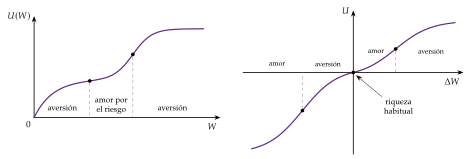
Violaciones del axioma de independencia: la paradoja de Allais
Desde los años 50, los experimentos que observan las elecciones reales ante el riesgo encuentran violaciones sistemáticas de la utilidad esperada. La más conocida es la paradoja de Allais. Allais (1953) planteó sus preguntas en un coloquio sobre el riesgo celebrado en París en 1952:18 pares de loterías en los que la mayoría elige de una forma que ninguna utilidad esperada puede racionalizar. Allais encontró evidencia contraria al axioma de independencia, y en particular un efecto certeza: se prefieren de forma desproporcionada los pagos seguros.
Podemos ilustrar la paradoja con el siguiente ejemplo (tabla 4), con 2 juegos y 2 loterías en cada uno:
en el juego 1, la mayoría elige \(A_1\): ofrece un pago esperado mayor (\(0{,}75\cdot 110=82{,}5\) frente a \(0{,}80\cdot 100=80\)) y la diferencia en la probabilidad de cobrar algo (75 % frente a 80 %) parece poco importante;
en el juego 2, que es como el primero con 20 puntos más de probabilidad de cobrar en cada lotería, la mayoría elige \(B_2\), el pago seguro, aunque su pago esperado sea menor (\(100\) frente a \(0{,}95\cdot 110=104{,}5\)).
| Juego 1 | Juego 2 |
|---|---|
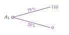 |
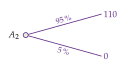 |
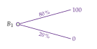 |
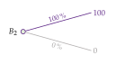 |
Fuente: elaboración propia a partir de Allais (1953) y Kahneman y Tversky (1979, problemas 3 y 4). En sombreado, la elección de la mayoría.
Ninguna utilidad esperada racionaliza ese par de elecciones. Normalizando \(u(0)=0\): \[\begin{aligned} A_1\succ B_1&\iff 0{,}75\,u(110)>0{,}80\,u(100)\iff\frac{u(110)}{u(100)}>\frac{0{,}80}{0{,}75}\approx 1{,}067,\\ B_2\succ A_2&\iff u(100)>0{,}95\,u(110)\iff\frac{u(110)}{u(100)}<\frac{1}{0{,}95}\approx 1{,}053 , \end{aligned}\] y ningún cociente puede ser a la vez mayor que 1,067 y menor que 1,053, sea cual sea \(u\).
Por qué viola la independencia (anexo F.5): las loterías del juego 1 son, casi exactamente, las del juego 2 mezcladas con la misma lotería que da 0 con certeza: \(B_1\) es un 80 % de \(B_2\) y un 20 % de nada, y un 80 % de \(A_2\) y un 20 % de nada daría 110 con probabilidad 0,76, algo mejor que \(A_1\). Según el axioma de independencia, mezclar 2 loterías con una tercera en la misma proporción no debería alterar el orden entre ellas: quien prefiere \(B_2\) a \(A_2\) debería preferir \(B_1\) a \(A_1\). Lo altera el efecto certeza: pasar del 80 % al 100 % de probabilidad de cobrar pesa mucho más que pasar del 75 % al 95 %, porque elimina todo el riesgo.
Con números parecidos, en Kahneman y Tversky (1979, problemas 3 y 4) el 80 % de los sujetos prefirió 3.000 seguros a 4.000 con probabilidad del 80 %, pero el 65 % prefirió 4.000 con el 20 % a 3.000 con el 25 %, aunque el segundo par es el primero con las probabilidades divididas por 4 (el efecto razón común).19
En el triángulo de Marschak-Machina (gráfico 3), la utilidad esperada da curvas de indiferencia rectas y paralelas; las elecciones de Allais piden curvas que se abren en abanico (fanning out), más inclinadas cuanto mejor es la lotería (Machina, 1982).
Violaciones de la invariancia: efectos marco y de modo de respuesta
La teoría supone que la elección depende solo de las loterías, no de cómo se presentan (invariancia descriptiva) ni de cómo se pregunta por ellas (invariancia procedimental). Ninguna se cumple, como han mostrado, entre otros, los trabajos de Richard Thaler:20
Efecto marco (framing effect): el mismo problema, presentado como ganancias o como pérdidas, lleva a elecciones opuestas (Tversky y Kahneman, 1981); también influyen la forma de describirlo (una matriz, un árbol, una ruleta) o plantearlo como una apuesta o como un seguro. Ocurre porque las personas valoran los resultados respecto a un punto de referencia, como había sugerido Markowitz.
Efecto modo de respuesta o inversión de preferencias: entre una apuesta con probabilidad alta de un premio modesto y otra con probabilidad baja de un premio grande, muchos eligen la primera pero piden un precio mayor por la segunda (Lichtenstein y Slovic, 1971). El resultado se mantiene con incentivos monetarios reales (Grether y Plott, 1979), y lo que pone en duda no es solo la independencia, sino la propia idea de un orden de preferencias estable.
Valoración: normativa frente a descriptiva
Aunque no prediga bien qué deciden las personas concretas, la utilidad esperada sigue siendo la referencia de lo que debería decidir quien acepta sus axiomas: tiene un valor normativo que va más allá del positivo. Y es razonable pensar que, cuanto mejor informados estén los agentes y más incentivos tengan para corregir sus errores, más se acercarán sus decisiones a las que predice.
Pero hay una crítica que no se resuelve con más información. Rabin (2000) demuestra que la aversión a riesgos pequeños, la que se observa (por ejemplo, en las franquicias de los seguros), solo cabe en la utilidad esperada con una curvatura que implica una aversión absurda a riesgos grandes: quien rechaza siempre una apuesta al 50 % de perder 100 euros o ganar 110 debería rechazar una al 50 % de perder 1.000 o ganar cualquier cantidad. La aversión a riesgos pequeños no viene de la curvatura de \(u\) sobre la riqueza, sino de valorar ganancias y pérdidas respecto a un punto de referencia.
En definitiva, estas regularidades, que contradicen supuestos clave de la teoría, han guiado el desarrollo de enfoques alternativos que puedan acomodarlas.
II.2. Enfoques alternativos: modelos de utilidad no esperada. Teoría de las perspectivas (Kahneman y Tversky, 1979)
En el cante de II.2 (4′30″): la idea y la diferencia con la utilidad esperada en 3 cuestiones (definición, valoración y ponderación); la fase de edición con el punto de referencia; la función clave \(V\); la función de valor en S (gráfico 11), imprescindible, con la aversión a las pérdidas y \(\lambda\approx 2{,}25\); la función de ponderación (gráfico 12); el patrón cuádruple, que responde a la pregunta del enganche; la teoría acumulativa y la dependiente del rango en una frase; 2 anomalías (efecto dotación y prima de las acciones), y la valoración. La forma paramétrica, la tabla de teorías no esperadas, la caja de finanzas conductuales y el experimento del efecto marco son de profundización.
a) Idea
La acumulación de anomalías dio lugar a las teorías de la utilidad no esperada (non-expected utility theories), que debilitan el axioma de independencia. La más influyente es la teoría de las perspectivas (prospect theory) de los psicólogos Daniel Kahneman y Amos Tversky.
Su colaboración empezó en 1969, cuando Kahneman invitó a Tversky a su seminario de la Universidad Hebrea de Jerusalén. En los años 50 ambos habían estado en el ejército israelí, pero no juntos: Kahneman, en su rama de psicología; Tversky, como oficial paracaidista (Kahneman, 2002).
Publicaron la teoría en Econometrica en marzo de 1979 (Kahneman y Tversky, 1979) y la reformularon con probabilidades acumuladas en Tversky y Kahneman (1992). Eligieron a propósito un nombre sin significado preciso, para que fuera fácil de distinguir si la teoría llegaba a conocerse (Kahneman, 2002).
Es una teoría descriptiva (positiva), con base empírica: no dice cómo debería elegirse, sino cómo se elige. Se diferencia de la utilidad esperada en 3 cuestiones: cómo se definen las alternativas (como ganancias o pérdidas respecto a un punto de referencia), cómo se valoran (con una función de valor en forma de S) y cómo se ponderan (con pesos de decisión, no con probabilidades).
b) Modelo
i) Supuestos
Nuestra limitada capacidad de cálculo nos obliga a simplificar los problemas de decisión, y lo hacemos con reglas heurísticas. Por eso la elección tiene 2 fases:
Fase de edición: el decisor simplifica el problema.
La operación clave es la codificación: los resultados se ven como ganancias o pérdidas respecto a un punto de referencia \(r\), no como niveles de riqueza final. Suele ser la situación actual (el statu quo), pero también puede ser una aspiración o una cifra que sugiere, sin darnos cuenta, quien plantea el problema.
Otras operaciones son la combinación de resultados iguales, la segregación de la parte segura, la cancelación de lo que es común a 2 alternativas y la eliminación de las alternativas dominadas. Cómo se combinan o se separan las ganancias y las pérdidas sucesivas (¿una ganancia seguida de una pérdida menor se vive como una ganancia neta o como 2 sucesos?) tiene gran importancia.
Fase de evaluación: cada alternativa editada se valora con la función de valor y los pesos de decisión.
ii) Desarrollo
El valor de una alternativa con resultados \(x_s\) y probabilidades \(\pi_s\) es
\[V=\sum_{s=1}^{S}w(\pi_s)\,v(x_s-r)\tag{11}\]
donde \(v(\cdot)\) es la función de valor, definida sobre ganancias y pérdidas, y \(w(\cdot)\) la función de ponderación de las probabilidades. Con \(r=0\), \(w(\pi)=\pi\) y \(v=u\), es la utilidad esperada (1).
La función de valor (gráfico 11) tiene forma de S y 3 propiedades:
dependencia del punto de referencia: se valoran cambios, no niveles de riqueza;
sensibilidad decreciente: es cóncava en las ganancias, porque cada euro ganado añade menos valor (aversión al riesgo: «más vale pájaro en mano que ciento volando»), y convexa en las pérdidas, porque cada euro perdido resta menos (búsqueda del riesgo: «de perdidos, al río»);
aversión a las pérdidas: es más inclinada en las pérdidas que en las ganancias, con un quiebro en el punto de referencia. Por eso la mayoría rechaza una apuesta al 50 % de ganar o perder la misma cantidad: las pérdidas duelen más de lo que alegran las ganancias del mismo importe.
La forma que estiman Tversky y Kahneman (1992), con la misma curvatura para ganancias y pérdidas, es \[\tag{12} v(z)=\begin{cases} z^{\beta} & \text{si } z\geq 0,\\ -\lambda\,(-z)^{\beta} & \text{si } z<0,\end{cases}\qquad \beta\approx 0{,}88,\quad \lambda\approx 2{,}25 ,\] con \(z=x_s-r\): una pérdida duele algo más del doble que una ganancia del mismo tamaño.
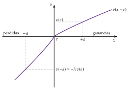
La función de ponderación (gráfico 12). Para recoger la paradoja de Allais y nuestra hipersensibilidad a los riesgos pequeños, los resultados no se ponderan con sus probabilidades, sino con pesos de decisión \(w(\pi)\), que guardan con ellas una relación no lineal:
\(w\) es creciente, con \(w(0)=0\) y \(w(1)=1\);
sobrepondera las probabilidades bajas e infrapondera las medias y altas, y es poco sensible en los tramos centrales;
recupera la sensibilidad cerca de los extremos, sobre todo al pasar de casi seguro a seguro: es el efecto certeza de Allais.
La forma estimada por Tversky y Kahneman (1992) es \[\tag{13} w(\pi)=\frac{\pi^{\delta}}{\big[\pi^{\delta}+(1-\pi)^{\delta}\big]^{1/\delta}},\qquad\delta\approx 0{,}61 \text{ en las ganancias y } 0{,}69 \text{ en las pérdidas}.\] Con \(\delta=0{,}61\), por ejemplo, \(w(0{,}01)\approx 0{,}055\) y \(w(0{,}9)\approx 0{,}71\).
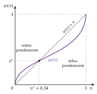
Fuente: elaboración propia a partir de Tversky y Kahneman (1992).
iii) Implicaciones
La combinación de \(v\) y \(w\) da un patrón cuádruple de actitudes ante el riesgo (Tversky y Kahneman, 1992):
con probabilidades medias y altas, aversión al riesgo en las ganancias y búsqueda del riesgo en las pérdidas, por la forma de \(v\);
con probabilidades bajas, al revés: búsqueda del riesgo en las ganancias (se compra lotería) y aversión en las pérdidas (se compra seguro), porque \(w\) sobrepondera lo poco probable.
Es la respuesta a la pregunta de Friedman y Savage sin necesidad de una \(u\) con tramos: la misma persona sobrepondera tanto el premio improbable como el accidente improbable.
Efecto marco: como la función es cóncava en las ganancias y convexa en las pérdidas, cambiar el punto de referencia cambia la elección aunque no cambien los resultados finales (anotación siguiente). Y el efecto dotación, pedir por desprenderse de un bien bastante más de lo que se pagaría por comprarlo, es la aversión a las pérdidas aplicada a los bienes (Kahneman, Knetsch y Thaler, 1990) [ver tema 3.A.8].
Un experimento de efecto marco (Kahneman y Tversky, 1979, problemas 11 y 12). A un grupo se le dan 1.000 y se le ofrece elegir entre ganar 500 más seguros o 1.000 más con probabilidad del 50 %: el 84 % elige los 500 seguros. A otro grupo se le dan 2.000 y se le ofrece elegir entre perder 500 seguros o perder 1.000 con probabilidad del 50 %: el 69 % elige arriesgarse. En términos de riqueza final las 2 elecciones son idénticas (1.500 seguros frente a 1.000 o 2.000 al 50 %). Lo que cambia es el punto de referencia: en el primer marco se eligen ganancias, y la función de valor es cóncava; en el segundo, pérdidas, y es convexa. En el original, las cantidades eran libras israelíes.
c) Extensiones
Teoría acumulativa de las perspectivas. La versión de 1979 ponderaba cada probabilidad por separado y podía llevar a elegir loterías dominadas en primer orden, por lo que necesitaba que la fase de edición las eliminara. Tversky y Kahneman (1992) aplican \(w\) a las probabilidades acumuladas de obtener al menos cada resultado, con una ponderación para las ganancias y otra para las pérdidas: así respetan la dominancia, y la teoría se aplica también a la incertidumbre.
Otras teorías de la utilidad no esperada (tabla 5):
Utilidad dependiente del rango (Quiggin, 1982): ordenados los resultados de peor a mejor, \(x_1\leq\dots\leq x_S\), cada uno se pondera por la diferencia entre la probabilidad transformada de obtener al menos ese resultado y la de obtener uno mejor: \[V(\tilde{x})=\sum_{s=1}^{S}u(x_s)\Big[g\big(\pi_s+\dots+\pi_S\big)-g\big(\pi_{s+1}+\dots+\pi_S\big)\Big],\] con \(g\) creciente, \(g(0)=0\) y \(g(1)=1\). Si \(g(\pi)=\pi\), es la utilidad esperada; si \(g\) es convexa, el decisor es pesimista y da más peso a los peores resultados. Respeta la dominancia de primer orden y explica la paradoja de Allais. Es la que incorpora la teoría acumulativa.
Teoría del pesar (Loomes y Sugden, 1982; Bell, 1982): al valorar una alternativa se tiene en cuenta lo que se habría obtenido con la otra en el mismo estado, y el pesar por haber elegido mal pesa más que la satisfacción por haber acertado. Explica Allais y las inversiones de preferencias, a costa de admitir preferencias no transitivas.
Utilidad esperada generalizada (Machina, 1982): sin el axioma de independencia, unas preferencias suaves se comportan localmente como una utilidad esperada, y la hipótesis del abanico basta para explicar los efectos consecuencia común y razón común.
| Teoría | Valor de una lotería | Qué cambia |
|---|---|---|
| Utilidad esperada (von Neumann y Morgenstern, 1944) |
\(\sum_s\pi_s\,u(x_s)\) | — |
| Utilidad subjetivamente ponderada (Karmarkar, 1978) |
\(\dfrac{\sum_s w(\pi_s)\,u(x_s)}{\sum_s w(\pi_s)}\) | Pesos de decisión normalizados |
| Perspectivas (Kahneman y Tversky, 1979) |
\(\sum_s w(\pi_s)\,v(x_s-r)\) | Punto de referencia y pesos de decisión |
| Dependiente del rango (Quiggin, 1982) |
\(\sum_s u(x_s)\Big[g\big(\sum_{t\geq s}\pi_t\big)-g\big(\sum_{t>s}\pi_t\big)\Big]\) | Pesos que dependen del orden de los resultados |
| Utilidad ponderada (Chew, 1983) |
\(\dfrac{\sum_s \pi_s\,h(x_s)\,u(x_s)}{\sum_s \pi_s\,h(x_s)}\), \(h>0\) | Pesos que dependen del resultado |
| Pesar (Loomes y Sugden, 1982; Bell, 1982) |
Utilidad del resultado y pesar frente a la otra alternativa en cada estado | Se compara con lo que se habría obtenido |
| Perspectivas acumulativa (Tversky y Kahneman, 1992) |
Como la dependiente del rango, sobre \(v(x_s-r)\), con un \(w\) para ganancias y otro para pérdidas | Las 2 cosas |
Fuente: elaboración propia a partir de las obras citadas y de Starmer (2000).
d) Evidencia empírica
Los resultados de 1979 se replican: en 2020, una réplica con 4.098 personas de 19 países reprodujo el 94 % de ellos, con efectos algo menores que los originales (Ruggeri et al., 2020).
La teoría explica regularidades económicas que la utilidad esperada no explica [ver tema 3.A.1]:
rigidez a la baja de los salarios nominales: un recorte nominal se percibe como una pérdida y se juzga injusto, mientras que no actualizar el salario con la inflación se percibe como renunciar a una ganancia, lo que duele menos (Kahneman, Knetsch y Thaler, 1986). Por eso la inflación y las devaluaciones facilitan ajustar los salarios reales;
vivienda: en las caídas de precios, los propietarios que venderían con pérdida nominal piden precios más altos y tardan más en vender, de modo que el mercado de segunda mano se paraliza en lugar de ajustarse (Genesove y Mayer, 2001);
riesgos nuevos y poco probables: se sobrevaloran, porque se les da un peso de decisión muy superior a su probabilidad. Tras el 11 de septiembre de 2001, muchos estadounidenses cambiaron el avión por el coche, y en los 3 meses siguientes hubo unas 350 muertes más en carretera de las esperadas (Gigerenzer, 2004);
felicidad y renta: según Easterlin (1974), la felicidad declarada apenas sube cuando crece la renta media de un país, porque se valora la renta respecto a una referencia (la de los demás o la propia pasada). La paradoja sigue en discusión: con más países y más años, Stevenson y Wolfers (2008) encuentran una relación positiva.
Aplicación a las finanzas conductuales [ver tema 3.A.1] [ver tema 3.B.23]. La teoría de las perspectivas explica varios enigmas que la teoría financiera tradicional explica mal:
Prima de las acciones (equity premium puzzle): ¿por qué las acciones han rendido en Estados Unidos, a largo plazo, unos 6 puntos al año más que las letras del Tesoro y unos 5 más que los bonos? Mehra y Prescott (1985) mostraron que, con una aversión al riesgo razonable, la utilidad esperada solo explica una prima muy inferior (con sus datos de 1889-1978, la prima sobre las letras era de 6,2 puntos; con los de 1928-2025, la media geométrica anual es de unos 6,7 puntos sobre las letras y 5,5 sobre los bonos a 10 años) (Damodaran, 2026; UBS, 2026). Benartzi y Thaler (1995) la explican con aversión miope a las pérdidas: si el inversor revisa su cartera con frecuencia y las pérdidas le duelen el doble que las ganancias, las acciones le parecen muy arriesgadas, y exige por ellas una prima alta. Corolario, confirmado en experimentos: la aversión a la renta variable disminuye cuanto más largo es el periodo con el que se evalúa la cartera.
Exceso de volatilidad: las cotizaciones oscilan mucho más que los dividendos que, en teoría, descuentan (Shiller, 1981). Tras ganancias, el inversor se siente «jugando con el dinero de la casa» (Thaler y Johnson, 1990), porque una pérdida solo reduciría su ganancia acumulada, y su aversión baja; tras pérdidas, sube. Eso amplifica los movimientos de los precios (Barberis, Huang y Santos, 2001).
Efecto disposición: se venden demasiado pronto las acciones con plusvalía y se retienen demasiado las que tienen minusvalía (H. Shefrin y Statman, 1985). Con una ganancia latente de 5 y la misma probabilidad de que llegue a 10 o vuelva a 0, la concavidad de \(v\) en las ganancias hace preferir los 5 seguros: se vende. Con una pérdida latente de 5 y la misma probabilidad de llegar a \(-10\) o volver a 0, la convexidad en las pérdidas hace preferir arriesgarse: se retiene.
Dividendos: ¿por qué las empresas de Estados Unidos pagaban dividendos cuando, hasta 2003, tributaban más que las plusvalías (J. G. Gravelle, 2003; Internal Revenue Service, 2026)? Por la concavidad de \(v\) en las ganancias, 2 ganancias separadas (un dividendo de 2 y una plusvalía de 8) se valoran más que una de 10; y, por la convexidad en las pérdidas, un dividendo de 2 junto a una pérdida de 12 duele menos que una pérdida neta de 10 (H. M. Shefrin y Statman, 1984; Thaler, 1985). Es el consejo de Maquiavelo: «las injurias deben hacerse todas a la vez, para que, al saborearse menos, ofendan menos; los beneficios deben hacerse poco a poco, para que se saboreen mejor» (Maquiavelo, 1532, cap. VIII).
e) Valoración
Aunque tiene ya casi medio siglo, la teoría de las perspectivas es la descripción de la elección con riesgo que mejor encaja con los experimentos, y ha dado origen a la economía y a las finanzas conductuales, que se aplican hoy en campos tan distintos como el derecho o el diseño de políticas públicas. Kahneman (2003), en su conferencia Nobel, la sitúa en el marco de la racionalidad limitada de Simon (1955): la mente usa atajos que funcionan bien casi siempre y fallan de forma sistemática en algunos casos. Thaler (2018) resume cómo esas ideas pasaron de anomalías a políticas, los «empujones» (nudges).
Sus límites: el punto de referencia no está determinado por la teoría (¿la riqueza actual, la esperada, la de los demás?), lo que le da muchos grados de libertad; no tiene la fuerza normativa de la utilidad esperada, y sus aplicaciones a los mercados requieren supuestos sobre cómo se agregan los sesgos individuales. Es un complemento de la teoría estándar, que hace comprensible lo que parecía anómalo, más que su sustituto.
La utilidad esperada falla al describir la elección con riesgo por el axioma de independencia (Allais) y por la invariancia (efectos marco). La teoría de las perspectivas lo explica con un punto de referencia, aversión a las pérdidas y pesos de decisión: por eso la misma persona compra el seguro y el décimo.
Recapitulación: todas las teorías vistas hasta aquí, la utilidad esperada y sus alternativas, suponen que las probabilidades se conocen. ¿Y si no se conocen? Pasamos a ver qué ocurre cuando ni siquiera se conocen las probabilidades: es el tercer bloque.
III. Elección del consumidor en situaciones de incertidumbre
Hasta aquí las probabilidades eran conocidas; pasamos al caso en que no lo son, que es el más frecuente. Este bloque responde a la última pregunta. Su conclusión anticipada: si las preferencias cumplen los axiomas de Savage, el consumidor actúa como si tuviera probabilidades subjetivas y maximiza una utilidad esperada con ellas, de modo que riesgo e incertidumbre se tratan igual; pero la paradoja de Ellsberg muestra que las personas sí los distinguen, y los modelos de ambigüedad recogen esa diferencia.
III.1. Teoría de la probabilidad subjetiva
En el cante de III.1 (3′): la definición de incertidumbre de Knight; Savage con actos, el principio de la cosa segura y el teorema, sobre la misma fórmula de la esquina de la pizarra (solo se dice que ahora las \(\pi_s\) son subjetivas); Anscombe-Aumann en una frase, y la paradoja de Ellsberg con el esquema de las 2 urnas y el razonamiento que muestra que ninguna probabilidad la racionaliza. Los 7 postulados uno a uno, la versión de 3 colores y la evidencia de campo son de profundización.
III.1.1. Desarrollo del teorema de la utilidad esperada subjetiva
a) Idea
Hay incertidumbre, en el sentido de Knight (1921), cuando la aleatoriedad no se presenta con probabilidades objetivas, ni dadas ni calculables: una recesión el año próximo, el éxito de un producto nuevo, una pandemia. Es la situación más habitual en la vida económica.
La respuesta de la teoría es la probabilidad subjetiva: no se suponen probabilidades, sino que se deducen de las elecciones. Si alguien prefiere apostar a que llueve mañana antes que a que no llueve, por el mismo premio, revela que cree más probable la lluvia. Con axiomas adecuados, esas creencias se comportan como una probabilidad.
b) Modelo
i) Supuestos
Los objetos de elección son actos: funciones que asignan un resultado a cada estado de la naturaleza, \(\vec{x}=(x_1,\dots,x_S)\) (una apuesta, un seguro, una inversión). Sobre ellos, Savage (1954) impone 7 postulados (P1-P7). Los esenciales:
P1, orden: la relación \(\succcurlyeq\) entre actos es completa y transitiva;
P2, principio de la cosa segura (sure-thing principle): si 2 actos dan lo mismo en un suceso, la preferencia entre ellos no depende de qué den allí. Es la versión subjetiva del axioma de independencia;
P3 y P4: el orden de los resultados no depende del estado en que se reciben, y la apuesta preferida entre 2 sucesos no depende del premio (así se puede leer en ella qué suceso se cree más probable);
P5 a P7: no todo es indiferente; los sucesos se pueden partir en otros tan poco probables como se quiera (una forma de continuidad), y una condición técnica para infinitos resultados.
ii) Desarrollo
Teorema de la utilidad esperada subjetiva: si se cumplen P1-P7, existen una única distribución de probabilidad \((\pi_1,\dots,\pi_S)\) sobre los estados y una utilidad \(u\), única salvo transformaciones afines positivas, tales que \[\tag{14} \vec{x}\succcurlyeq\vec{x}'\iff\sum_{s=1}^{S}\pi_s\,u(x_s)\geq\sum_{s=1}^{S}\pi_s\,u(x_s') .\] Es la misma fórmula que la función clave (1); lo que cambia es la lectura de las \(\pi_s\): ya no son datos objetivos, sino creencias del decisor, que el teorema deriva a la vez que la utilidad.
iii) Implicaciones
La utilidad esperada de von Neumann-Morgenstern es el caso particular en que las probabilidades son objetivas y todos las comparten. Riesgo e incertidumbre quedan unificados con el mismo aparato: todo lo visto en el bloque I (aversión, seguros, carteras) vale con probabilidades subjetivas.
Por lo mismo, la utilidad esperada subjetiva hereda las críticas de la objetiva (II.1) y añade una propia, la de Ellsberg.
c) Extensiones
Anscombe y Aumann (1963) simplifican la demostración usando a la vez sucesos sin probabilidad conocida (una carrera de caballos) y loterías objetivas (una ruleta): aplican los axiomas de von Neumann-Morgenstern a las loterías y añaden la independencia del estado. Es la versión de los manuales (Mas-Colell, Whinston y Green, 1995, párr. 6.F): con una independencia extendida a los actos se obtiene una utilidad que puede depender del estado, \(\sum_s u_s(x_s)\), y, si las preferencias son uniformes entre estados (el orden de los resultados es el mismo en todos), se escribe \(\sum_s\pi_s\,u(x_s)\), con probabilidades subjetivas únicas.21
III.1.2. Limitaciones y críticas a la teoría de la probabilidad subjetiva
La paradoja de Ellsberg
Ellsberg (1961), entonces analista de la RAND Corporation, propone 2 urnas con 100 bolas rojas y negras (gráfico 13): la urna conocida tiene 50 de cada color; de la urna ambigua no se sabe la proporción. Se gana un premio si sale el color al que se apuesta.
La mayoría prefiere apostar a la urna conocida tanto si se le pide apostar a «roja» como si se le pide apostar a «negra». Con probabilidades subjetivas, preferir la urna conocida para «roja» exige \(\pi(\text{roja en la ambigua})<\tfrac12\), y para «negra», \(\pi(\text{negra en la ambigua})<\tfrac12\): las 2 suman menos de 1. Ninguna distribución de probabilidad racionaliza esas elecciones.22
La explicación es la aversión a la ambigüedad: se prefiere el riesgo conocido a la incertidumbre, como si la falta de información fuera un mal en sí misma. No es un error de cálculo: muchos mantienen su elección después de que se les explique, como ocurría con Allais. Y no es solo de laboratorio: en una muestra representativa de la población neerlandesa, la aversión a la ambigüedad se asocia a una menor participación en bolsa (Dimmock, Kouwenberg y Wakker, 2016).
La paradoja muestra que la incertidumbre de Knight no se reduce a un riesgo con probabilidades subjetivas: hacen falta modelos que distingan el riesgo de la ambigüedad.
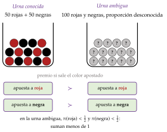
Fuente: elaboración propia a partir de Ellsberg (1961).
III.2. Enfoques alternativos
En el cante de III.2 (2′30″): la idea; el modelo de múltiples probabilidades con su fórmula y la urna de Ellsberg resuelta con números; Choquet y la ambigüedad suave en una frase cada uno, y los criterios clásicos de decisión en una frase cada uno, con la tabla como apoyo (no se escribe). La integral de Choquet, la fórmula de la ambigüedad suave y los cálculos de la tabla son de profundización.
a) Idea
Para recoger la aversión a la ambigüedad hay que abandonar la idea de una sola probabilidad aditiva. Ningún modelo con sofisticación probabilística, es decir, que base las elecciones en una probabilidad subjetiva aunque no las valore con la utilidad esperada (Machina y Schmeidler, 1992), puede explicar a Ellsberg, porque no hay ninguna probabilidad compatible con esas elecciones.
b) Modelos de aversión a la ambigüedad
Utilidad esperada con múltiples probabilidades (maxmin expected utility) (Gilboa y Schmeidler, 1989): el decisor no tiene una distribución de probabilidad, sino un conjunto \(\mathcal{P}\) de distribuciones que considera posibles (previos múltiples), y valora cada acto con la peor de ellas: \[\tag{15} U(\vec{x})=\min_{\vec{\pi}\in\mathcal{P}}\ \sum_{s=1}^{S}\pi_s\,u(x_s) .\]
Ellsberg con números: normalizamos \(u(\text{premio})=1\) y \(u(0)=0\). En la urna conocida, cada apuesta vale \(0{,}5\). En la ambigua, si \(\mathcal{P}\) contiene todas las proporciones de rojas entre el 30 % y el 70 %, apostar a «roja» vale \(\min\pi(\text{roja})=0{,}3\) y apostar a «negra», \(\min\big(1-\pi(\text{roja})\big)=0{,}3\): las 2 apuestas a la urna ambigua valen menos que las de la conocida, como eligen las personas.
El tamaño de \(\mathcal{P}\) mide cuánta ambigüedad percibe el decisor. Si \(\mathcal{P}\) tiene una sola distribución, el modelo es la utilidad esperada subjetiva; si las tiene todas, es el criterio maximin de Wald, que veremos a continuación.
Utilidad esperada de Choquet (Schmeidler, 1989): las creencias son una capacidad \(\nu\), una «probabilidad» que no tiene por qué ser aditiva, y el acto se valora con la integral de Choquet. Con \(\nu(\text{roja})=\nu(\text{negra})=0{,}3\) y \(\nu(\text{roja o negra})=1\) en la urna ambigua, cada apuesta vale \(0{,}3\). La aversión a la ambigüedad equivale a que la capacidad sea convexa, \(\nu(A\cup B)+\nu(A\cap B)\geq\nu(A)+\nu(B)\), y entonces el modelo coincide con el de múltiples probabilidades.23
Ambigüedad suave (Klibanoff, Marinacci y Mukerji, 2005): el decisor tiene una incertidumbre de segundo orden, una distribución \(\mu\) sobre qué probabilidad \(\vec{\pi}\) es la verdadera, y la valora con una función \(\phi\): \[U(\vec{x})=\int\phi\Big(\sum_{s=1}^{S}\pi_s\,u(x_s)\Big)\,d\mu(\vec{\pi}).\] Si \(\phi\) es lineal, vuelve a la utilidad esperada subjetiva; si es cóncava, hay aversión a la ambigüedad, igual que la concavidad de \(u\) da aversión al riesgo. Separa así la ambigüedad percibida (\(\mu\)) de la actitud ante ella (\(\phi\)); con una \(\phi\) infinitamente cóncava se obtiene el modelo de múltiples probabilidades.
c) Criterios clásicos de decisión en ignorancia
Si el decisor no tiene ninguna información sobre los estados, ni siquiera un conjunto de probabilidades, la teoría de la decisión de los años 50 propone reglas sencillas, que no usan probabilidades (Luce y Raiffa, 1957, cap. 13). Con los pagos de la tabla 6, en la que ninguna acción domina a otra:
Criterio de Wald (maximin, pesimista) (Wald, 1950): elegir la acción cuyo peor resultado es el mejor. Elige \(B\), cuyo peor resultado es 4.24
Criterio maximax (optimista): elegir la acción cuyo mejor resultado es el mejor. Elige \(C\), que puede dar 13.
Criterio de Laplace (de la razón insuficiente): si no hay motivo para creer un estado más probable que otro, se les da la misma probabilidad y se elige la acción de mayor media. Elige \(A\), con media 6.
Criterio de Hurwicz: media ponderada del mejor resultado, con un peso \(\alpha\in[0,1]\) (el coeficiente de optimismo), y del peor, con peso \(1-\alpha\) (Arrow y Hurwicz, 1972). Con \(\alpha=0\) es el de Wald y con \(\alpha=1\), el maximax. Aquí elige \(B\) si \(\alpha<1/7\), \(D\) si \(1/7<\alpha<1/2\) y \(C\) si \(\alpha>1/2\).
Criterio de Savage (minimax regret) (Savage, 1951): en cada estado, el pesar de una acción es lo que se deja de ganar frente a la mejor acción en ese estado; se elige la acción cuyo pesar máximo es el menor. No se suman los pesares: se mira el peor de cada acción. Elige \(D\), con un pesar máximo de 4.
| Pagos | Pesares | Peor | Mejor | Media | Pesar máx. | |||||
| Acción | \(s_1\) | \(s_2\) | \(s_3\) | \(s_1\) | \(s_2\) | \(s_3\) | (Wald) | (maximax) | (Laplace) | (Savage) |
| \(A\) | 8 | 2 | 8 | 5 | 2 | 0 | 2 | 8 | 6 | 5 |
| \(B\) | 4 | 4 | 4 | 9 | 0 | 4 | 4 | 4 | 4 | 9 |
| \(C\) | 13 | 0 | 1 | 0 | 4 | 7 | 0 | 13 | 4,67 | 7 |
| \(D\) | 10 | 3 | 4 | 3 | 1 | 4 | 3 | 10 | 5,67 | 4 |
Fuente: elaboración propia a partir de Luce y Raiffa (1957, cap. 13). En sombreado, la acción que elige cada criterio.
d) Valoración
Cada criterio clásico incumple alguna propiedad razonable (Milnor, 1954): Wald y maximax solo miran un resultado por acción; Laplace depende de cómo se cuenten los estados (partir uno en 2 cambia las probabilidades), y el de Savage incumple la independencia de las alternativas irrelevantes: añadir una acción que nadie elegiría puede cambiar los pesares y la elección entre las demás. Son reglas prácticas para la ignorancia completa, no una teoría de las preferencias; los modelos de ambigüedad son su versión axiomática.
Los modelos de ambigüedad dan contenido formal a la incertidumbre de Knight: ya no es lo que no se puede medir, sino la parte de las creencias que no se resume en una sola probabilidad. Se aplican en macroeconomía y finanzas, por ejemplo para explicar la huida de los inversores en las crisis o para diseñar políticas que funcionen bien aunque el modelo sea incorrecto, la robustez de Hansen y Sargent (2008). Su límite es que tienen más parámetros (el conjunto \(\mathcal{P}\), la capacidad o la función \(\phi\)) y menos contrastes empíricos que la utilidad esperada.
Con los axiomas de Savage, la incertidumbre se reduce al riesgo con probabilidades subjetivas; la aversión a la ambigüedad de Ellsberg rompe esa equivalencia, y los modelos de múltiples probabilidades, de Choquet y de ambigüedad suave la recogen.
Recapitulación: sin probabilidades objetivas, la teoría las sustituye por creencias; cuando las creencias son difusas, el decisor se protege de lo que no sabe. Con esto hemos respondido a las 4 preguntas de la introducción y podemos cerrar la exposición.
Conclusión
Recapitulación (ideas clave):
En conclusión, con unos axiomas razonables sobre las loterías, sobre todo el de independencia, las preferencias se representan con la utilidad esperada, y toda la actitud ante el riesgo queda en la curvatura de la utilidad de Bernoulli: el averso paga una prima por librarse del riesgo, se asegura del todo si la prima es justa y compra algo de un activo con riesgo si su rentabilidad esperada es favorable (I).
Las personas se apartan de ella de forma sistemática (Allais, los efectos marco): valoran ganancias y pérdidas respecto a un punto de referencia y deforman las probabilidades, como recoge la teoría de las perspectivas (II).
Cuando las probabilidades no se conocen, Savage muestra que se puede actuar como si se tuvieran; Ellsberg muestra que la gente rechaza la ambigüedad, y los modelos de previos múltiples lo acomodan (III).
Relevancia: la utilidad esperada es el lenguaje en que se escriben la teoría de carteras [ver tema 3.B.23], la demanda de dinero como activo [ver tema 3.A.35], los seguros y los contratos con información asimétrica [ver tema 3.A.13] y los juegos con estrategias mixtas y las subastas [ver tema 3.A.14]; y justifica la regulación que protege a quien no puede diversificar, como los seguros obligatorios o la garantía de depósitos (anexo D). Sus críticas son el origen de la economía conductual [ver tema 3.A.1].
Extensiones y relación con otras partes del temario:
El equilibrio general con bienes contingentes y títulos de Arrow reparte el riesgo de forma eficiente si los mercados son completos [ver tema 3.A.21]; si faltan mercados o la información es asimétrica, no [ver tema 3.A.13].
En macroeconomía, la aversión relativa constante fija también la elasticidad de sustitución intertemporal [ver tema 3.A.29]; la prudencia explica el ahorro precautorio que el paseo aleatorio de Hall excluye [ver tema 3.A.33], y la incertidumbre y la irreversibilidad retrasan la inversión [ver tema 3.A.34]. La aversión a la ambigüedad inspira la política monetaria robusta de Hansen y Sargent.
Opinión: la utilidad esperada y la teoría de las perspectivas no compiten en el mismo terreno. La primera es normativa: dice cómo debería elegir un decisor coherente, y por eso sigue siendo la referencia para diseñar seguros, carteras o políticas. La segunda es positiva: describe cómo elegimos de verdad, y por eso ayuda a predecir y a corregir los errores, como el ahorro insuficiente para la jubilación o el sobreaseguro de los riesgos pequeños. Un buen análisis necesita las 2.
Idea final: volviendo al refranero, los 2 refranes tienen razón, cada uno en su terreno. Ante las ganancias probables somos prudentes («más vale pájaro en mano») y ante las pérdidas probables, temerarios («de perdidos, al río»); pero ante lo poco probable cambiamos de bando: sobreponderamos tanto el premio como el accidente. Es el patrón cuádruple de la teoría de las perspectivas, y por eso la misma persona compra el seguro y el décimo de Navidad: no valora su riqueza final, sino lo que gana o pierde respecto a donde está, y no pesa las probabilidades como las calcula un matemático.
A. La función de utilidad de von Neumann y Morgenstern: una utilidad «cardinal que es ordinal» (Baumol, 1958)
Este anexo no se canta: precisa en qué sentido es cardinal la utilidad esperada (I.1.1), de forma coherente con la teoría del consumidor [ver tema 3.A.8].
Escalas de medida (Stevens, 1946): lo que una escala permite decir depende de las transformaciones que la dejan igual de válida (tabla 7).
| Escala | Ejemplo | Transformaciones admitidas |
Orden | Diferencias | Cocientes |
|---|---|---|---|---|---|
| Ordinal | Dureza (escala de Mohs); utilidad con certidumbre | Cualquier creciente | \(\checkmark\) | \(\times\) | \(\times\) |
| De intervalo | Temperatura en grados centígrados; utilidad de Bernoulli | Afín positiva, \(a\,x+b\) | \(\checkmark\) | \(\checkmark\) | \(\times\) |
| De razón | Peso, longitud | Proporcional, \(a\,x\) | \(\checkmark\) | \(\checkmark\) | \(\checkmark\) |
| Absoluta | Recuento | Ninguna | \(\checkmark\) | \(\checkmark\) | \(\checkmark\) |
Fuente: elaboración propia a partir de Stevens (1946); la escala absoluta es un añadido posterior a su clasificación.
La utilidad de Bernoulli es cardinal: \(u\) es única salvo transformaciones afines positivas. Si \(u^*=a\,u+b\) con \(a>0\), la utilidad esperada cambia en la misma transformación, \(U^*=a\,U+b\), y ordena igual las loterías; con una transformación creciente no afín, como \(u^*=u^3\), no. Por eso tiene sentido decir que la diferencia de utilidad entre 2 resultados es el doble que entre otros 2, pero no que la utilidad de uno es el doble que la de otro, igual que con los grados centígrados.
La utilidad sobre las loterías es ordinal: si solo se quiere representar el orden de las preferencias sobre las loterías, cualquier transformación creciente de \(U\) sirve: \(\mathbb{E}[u(\tilde{x})]\) y \(24\,\big(\mathbb{E}[u(\tilde{x})]\big)^3\) ordenan igual. Lo que se pierde al transformarla es la forma de utilidad esperada, la linealidad en las probabilidades. De ahí la fórmula de Baumol (1958): una utilidad «cardinal que es ordinal».25
Qué mide y qué no: la cardinalidad de \(u\) no mide la intensidad del placer, sino la actitud ante el riesgo: lo que importa es su curvatura. Tampoco permite comparar utilidades entre personas: cada \(u\) admite su propia transformación afín. Es lo que dice la teoría del consumidor al llamar cardinal a la utilidad de von Neumann-Morgenstern [ver tema 3.A.8].26
B. La paradoja de San Petersburgo
Este anexo no se canta: en el cuerpo basta una frase (I.1.1).
a) El valor esperado y el juego justo
Durante el desarrollo de la teoría moderna de la probabilidad, en el siglo XVII, matemáticos como Blaise Pascal y Pierre de Fermat estudiaron en qué condiciones un juego de azar resulta más o menos atractivo a través de su valor esperado.
El valor esperado de un juego es su esperanza matemática: la suma de los premios que ofrece multiplicados por sus probabilidades. Indica el premio que, en promedio, cabe esperar obtener jugando muchas veces.
De esa idea sale un criterio normativo para valorar un juego, el de juego justo: un juego es justo cuando su valor esperado es igual al precio que hay que pagar por participar, su precio justo. Si el valor esperado es mayor que el precio, el juego es favorable; si es menor, desfavorable.
b) El problema
Así estaban las cosas a comienzos del siglo XVIII. En 1713, el matemático suizo Nicolaus Bernoulli envió en una carta 5 problemas a Pierre Rémond de Montmort, que los publicó ese año en la 2.ª edición de su Essay d’analyse sur les jeux de hazard (Peterson, 2023; O’Connor y Robertson, 2026). Uno de ellos pasaría a la historia como la paradoja de San Petersburgo.27
En su versión con moneda: se lanza repetidamente al aire una moneda no trucada mientras salga cara. Cuando sale la primera cruz, se acaban los lanzamientos y se paga el premio: 2 ducados si la cruz sale en el primer lanzamiento, 4 si sale en el segundo, 8 si sale en el tercero, y así sucesivamente, duplicándose el premio con cada lanzamiento que se retrasa la cruz. Si la primera cruz sale en el lanzamiento \(k\), lo que ocurre con probabilidad \(1/2^k\), el premio es \(2^k\) ducados. ¿Cuál es el valor esperado del juego y, por tanto, su precio justo?
Según el criterio del valor esperado, estaríamos dispuestos a pagar \[\mathbb{E}[\tilde{x}]=2\cdot\frac12+4\cdot\frac14+8\cdot\frac18+\dots=\sum_{k=1}^{\infty}2^k\cdot\frac{1}{2^k}=\sum_{k=1}^{\infty}1=\infty .\] Sin embargo, nadie pagaría más que unos pocos ducados por jugar: el criterio del valor esperado no describe cómo se valora el juego. Es la paradoja.
c) La solución: la utilidad esperada
El juego de Nicolaus Bernoulli puso de manifiesto que, para valorar un juego, hay que tener en cuenta algo más que su valor esperado. Se propusieron varias soluciones; la que más trascendió es la de Gabriel Cramer, en una carta de 1728 a Nicolaus, y la de su primo Daniel Bernoulli (1738), que llega a la misma idea por su cuenta. Cramer lo resume así, y Bernoulli lo reproduce: los matemáticos valoran el dinero en proporción a su cantidad, y las personas de buen sentido, en proporción al uso que pueden hacer de él (Peterson, 2023). El artículo de Bernoulli se publica en las memorias de la Academia de San Petersburgo, de ahí el nombre de la paradoja.
La solución consiste en incorporar las preferencias de cada persona con una función de utilidad definida sobre los premios monetarios, la utilidad de Bernoulli \(u(x)\), y calcular la media ponderada por las probabilidades, no de los premios, sino de la utilidad que reportan: \[\mathbb{E}\big[u(\tilde{x})\big]=u(2)\cdot\frac12+u(4)\cdot\frac14+u(8)\cdot\frac18+\dots=\sum_{k=1}^{\infty}\frac{1}{2^k}\,u\big(2^k\big).\]
Imponiendo condiciones a \(u\), esa suma puede ser finita. Bernoulli propone \(u(x)=\ln x\), y Cramer, \(u(x)=\sqrt{x}\): ambos perciben que la utilidad marginal debe ser decreciente.
Con la utilidad de Bernoulli, \(u(x)=\ln x\): \[\mathbb{E}\big[u(\tilde{x})\big]=\sum_{k=1}^{\infty}\frac{1}{2^k}\,\ln\big(2^k\big)=\ln 2\,\sum_{k=1}^{\infty}\frac{k}{2^k}=2\ln 2 ,\] porque \(\sum_{k\geq 1}k\,q^k=q/(1-q)^2\), que con \(q=1/2\) vale 2. El equivalente cierto \(\xi\) es la cantidad cierta con la misma utilidad: \[u(\xi)=\mathbb{E}\big[u(\tilde{x})\big]\ \Longrightarrow\ \ln\xi=2\ln 2=\ln 4\ \Longrightarrow\ \xi=e^{2\ln 2}=4 \text{ ducados}.\] Es lo máximo que pagaría por jugar alguien con utilidad logarítmica y sin otra riqueza: el precio justo es infinito, pero el equivalente cierto es de solo 4 ducados.
Con la utilidad de Cramer, \(u(x)=\sqrt{x}\): \[\begin{aligned} \mathbb{E}\big[u(\tilde{x})\big]&=\sum_{k=1}^{\infty}\frac{2^{k/2}}{2^k}=\sum_{k=1}^{\infty}\left(\frac{1}{\sqrt2}\right)^{k}=\frac{1/\sqrt2}{1-1/\sqrt2}=\frac{1}{\sqrt2-1}=1+\sqrt2 ,\\ u(\xi)=\sqrt{\xi}=1+\sqrt2\ &\Longrightarrow\ \xi=\big(1+\sqrt2\big)^2=3+2\sqrt2\approx 5{,}83 \text{ ducados}. \end{aligned}\]
∎
d) Una salvedad
La utilidad marginal decreciente no basta si \(u\) no está acotada: con premios que crecen lo bastante deprisa (por ejemplo, \(e^{2^k}\) con \(u=\ln x\), que da \(\sum_k 2^k/2^k=\infty\)), la utilidad esperada vuelve a ser infinita. Solo una utilidad acotada evita todas las versiones de la paradoja (Menger, 1934).28
C. Aplicación: la decisión de cartera y la demanda de un activo con riesgo (Arrow, 1965)
Este anexo no se canta: en el cuerpo basta una frase (I.2.1). Es el problema inverso del seguro: allí el consumidor parte del riesgo y paga por acercarse a la línea de certeza; aquí parte de la certeza y hay que pagarle, en rentabilidad esperada, para que se aleje de ella.
a) Idea
Del seguro pasamos a la decisión de cartera: ¿cuánto invierte un consumidor averso en un activo cuya rentabilidad es incierta? Es la otra gran decisión financiera del hogar y la base de la teoría de carteras.
b) Modelo
i) Supuestos
El consumidor reparte una riqueza \(\overline{W}\) entre un activo seguro, con rentabilidad \(r_f\), y un activo con riesgo, con rentabilidad aleatoria \(\tilde{r}\); invierte \(\alpha\) euros en el segundo y el resto en el primero (Arrow, 1965; Pratt, 1964).
Su utilidad de Bernoulli es creciente y estrictamente cóncava: es averso al riesgo.
Llamamos \(\tilde{z}\equiv\tilde{r}-r_f\) a la rentabilidad en exceso del activo con riesgo (su prima de rentabilidad, si se toma la esperanza), y \(W_0\equiv\overline{W}(1+r_f)\) a la riqueza final si todo se invierte en el activo seguro.
ii) Desarrollo
Su riqueza final es \(\tilde{W}=\overline{W}(1+r_f)+\alpha\,(\tilde{r}-r_f)=W_0+\alpha\,\tilde{z}\), y elige \(\alpha\): \[\begin{array}{rl}\displaystyle \max_{\alpha} & \displaystyle \mathbb{E}\big[u(W_0+\alpha\,\tilde{z})\big]\end{array}\qquad\Longrightarrow\qquad\mathbb{E}\big[u'(W_0+\alpha^*\tilde{z})\,\tilde{z}\big]=0 .\] La condición de segundo orden, \(\mathbb{E}\big[u''(\tilde{W})\,\tilde{z}^2\big]<0\), se cumple por la concavidad de \(u\): la utilidad esperada es cóncava en \(\alpha\) y la condición de primer orden basta.
La pendiente en el origen: la derivada de la utilidad esperada en \(\alpha=0\), donde la riqueza es cierta, es \[\frac{d\,\mathbb{E}[u]}{d\alpha}\bigg|_{\alpha=0}=u'(W_0)\,\mathbb{E}[\tilde{z}]=u'(W_0)\big(\mathbb{E}[\tilde{r}]-r_f\big).\] Si la prima de rentabilidad es positiva, la utilidad esperada crece al invertir el primer euro y, como es cóncava en \(\alpha\), su máximo está en \(\alpha^*>0\); si es nula, el máximo está en \(\alpha^*=0\) (gráfico 14, izquierda).
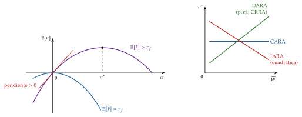
Interpretación gráfica en el plano de la riqueza en cada estado (gráfico 15). Con 2 estados igual de probables, uno bueno y otro malo, el punto de partida, \(C\) (\(\alpha=0\)), está en la línea de certeza. Invertir en el activo con riesgo desplaza al consumidor por una recta que sale de \(C\) hacia abajo y a la derecha: gana en el estado bueno y pierde en el malo.
Si \(\mathbb{E}[\tilde{r}]=r_f\), la recta tiene la misma pendiente que las curvas de indiferencia en la línea de certeza (\(-1\), el cociente de probabilidades) y es tangente en \(C\): no invierte nada.
Si \(\mathbb{E}[\tilde{r}]>r_f\), la recta es más plana: alejarse de la certeza lleva a curvas de indiferencia más altas, hasta la tangencia en \(E\), con \(\alpha^*>0\). Es el gráfico del seguro con prima recargada recorrido en sentido contrario.
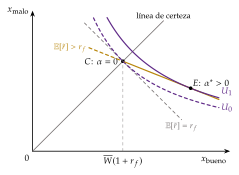
iii) Implicaciones
Resultado de Arrow: un consumidor averso siempre asume algo de un riesgo con esperanza favorable, porque, para riesgos pequeños, el coste de la aversión es de segundo orden (proporcional a \(\alpha^2\), como en (4)) y la ganancia esperada, de primer orden (proporcional a \(\alpha\)). Por la misma razón, solo un consumidor neutral invierte todo en el activo con mayor esperanza.
Riqueza e inversión con riesgo (gráfico 14, derecha): si la aversión absoluta es decreciente (DARA), \(\alpha^*\) crece con \(\overline{W}\): el activo con riesgo es un bien normal. Si es constante (CARA), \(\alpha^*\) no depende de la riqueza, y si es creciente (IARA, como la cuadrática), disminuye con ella: el activo con riesgo sería un bien inferior, lo que contradice la evidencia. Si la relativa es constante (CRRA), la proporción invertida, \(\alpha^*/\overline{W}\), no depende de la riqueza.
Derivación del resultado DARA. Derivando la condición de primer orden respecto a \(\overline{W}\) (con \(dW_0/d\overline{W}=1+r_f\)): \[\frac{d\alpha^*}{d\overline{W}}=(1+r_f)\,\frac{\mathbb{E}\big[u''(\tilde{W})\,\tilde{z}\big]}{-\mathbb{E}\big[u''(\tilde{W})\,\tilde{z}^2\big]} ,\] cuyo denominador es positivo, así que el signo es el de \(\mathbb{E}[u''(\tilde{W})\,\tilde{z}]\). Escribiendo \(u''=-r_A\,u'\):
si \(\tilde{z}>0\), \(\tilde{W}>W_0\) y, con DARA, \(r_A(\tilde{W})<r_A(W_0)\), luego \(-r_A(\tilde{W})\,u'(\tilde{W})\,\tilde{z}>-r_A(W_0)\,u'(\tilde{W})\,\tilde{z}\);
si \(\tilde{z}<0\), \(\tilde{W}<W_0\) y \(r_A(\tilde{W})>r_A(W_0)\), y como \(\tilde{z}\) es negativo se llega a la misma desigualdad.
Tomando esperanzas, \(\mathbb{E}[u''(\tilde{W})\,\tilde{z}]>-r_A(W_0)\,\mathbb{E}[u'(\tilde{W})\,\tilde{z}]=0\) por la condición de primer orden. Luego \(d\alpha^*/d\overline{W}>0\). ∎
c) Extensiones
Con varios activos, y si la utilidad esperada depende solo de la media y la varianza, se llega a la teoría de carteras de H. Markowitz (1952a) y Tobin (1958) (anexo E) [ver tema 3.B.23]; con el dinero como activo seguro, a la demanda de dinero por motivo especulación [ver tema 3.A.35].
D. Aplicación: el seguro de liquidez y los pánicos bancarios (Diamond y Dybvig, 1983)
Este anexo no se canta: es una aplicación de la utilidad esperada a los bancos. El desarrollo completo, la regulación (garantía de depósitos, resolución, recapitalización interna) y los casos recientes se estudian en [ver tema 3.B.26] y [ver tema 3.B.27].
a) Idea
Los depósitos bancarios son un seguro de liquidez, y ese mismo seguro hace a los bancos vulnerables a los pánicos (Diamond y Dybvig, 1983). Diamond y Dybvig recibieron por ello el Premio Nobel de Economía de 2022, junto con Ben Bernanke, «por sus investigaciones sobre los bancos y las crisis financieras» (Kungl. Vetenskapsakademien, 2022).
b) Modelo
i) Supuestos
Siguiendo a Freixas y Rochet (2008, cap. 7), hay 3 periodos (\(T=0,1,2\)) y un continuo de depositantes idénticos con una dotación de 1 en \(T=0\). Con probabilidad \(\pi\), cada uno resulta impaciente (solo valora consumir en \(T=1\)), y con \(1-\pi\), paciente (puede esperar a \(T=2\)); no hay incertidumbre agregada: una fracción \(\pi\) será impaciente. Una inversión ilíquida rinde \(R>1\) en \(T=2\), pero solo \(L\leq 1\) si se liquida en \(T=1\). Cada depositante maximiza su utilidad esperada, con \(u\) cóncava y aversión relativa mayor que 1.
ii) Desarrollo
Se comparan 3 asignaciones (gráfico 16):
En autarquía, cada uno invierte por su cuenta y, si resulta impaciente, liquida con pérdida. Con un mercado de bonos en \(T=1\) se obtiene \((c_1,c_2)=(1,R)\), mejor que la autarquía.
El óptimo reparte el riesgo de ser impaciente, como en el seguro: \[\begin{array}{rl}\displaystyle \max_{c_1,\,c_2} & \displaystyle \pi\,u(c_1)+(1-\pi)\,u(c_2) \\ \text{s.a.} & \pi\,c_1+\dfrac{(1-\pi)\,c_2}{R}=1\end{array}\qquad\Longrightarrow\qquad u'(c_1^*)=R\,u'(c_2^*),\quad 1<c_1^*<c_2^*<R .\] Se cede riqueza del estado bueno (ser paciente) al malo (ser impaciente).
Un banco que ofrece depósitos retirables \((c_1^*,c_2^*)\) alcanza el óptimo si solo retiran los impacientes. Pero, como \(c_1^*>1\), si los pacientes esperan que los demás retiren, el banco tendría que liquidar la inversión y no podría pagar a todos: retirar es también óptimo. Hay 2 equilibrios: el bueno y el pánico bancario, peor incluso que la autarquía.
iii) Implicaciones
La garantía de depósitos, la suspensión de la convertibilidad y el prestamista de última instancia eliminan el equilibrio malo, a costa de crear riesgo moral [ver tema 3.B.26] [ver tema 3.B.27].
En la Unión Europea, los depósitos están garantizados hasta 100.000 euros por depositante y entidad, y los fondos de garantía se financian con aportaciones de las propias entidades, con un objetivo del 0,8 % de los depósitos garantizados (Parlamento Europeo y Consejo de la Unión Europea, 2014, arts. 6 y 10; Fondo de Garantía de Depósitos de Entidades de Crédito, 2026).
La Directiva (UE) 2026/804 mantiene los 100.000 euros, protege durante 6 meses saldos mayores de carácter temporal (al menos 500.000 euros, por ejemplo tras vender una vivienda) y permite usar los fondos de garantía en la resolución de bancos (Parlamento Europeo y Consejo de la Unión Europea, 2026).
c) Evidencia empírica
Los pánicos siguen ocurriendo. En Grecia salieron de los bancos unos 40.000 millones de euros en depósitos en el primer semestre de 2015, hasta que a finales de junio el Gobierno cerró los bancos e impuso un control de capitales (Banco Central Europeo, 2026; Stournaras, 2017). Y son cada vez más rápidos: Silicon Valley Bank sufrió el 9 de marzo de 2023 retiradas de unos 42.000 millones de dólares en un solo día y quebró al siguiente (Board of Governors of the Federal Reserve System, 2023).
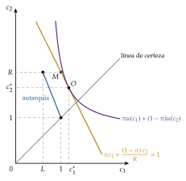
E. Aplicación: el modelo de media y varianza (Markowitz, 1952)
Este anexo no se canta: precisa la frase del cuerpo sobre la media y la varianza (I.1.2). La teoría de carteras se estudia en [ver tema 3.B.23].
Cuándo la utilidad esperada depende solo de la media y la varianza (Tobin, 1958). Sea \(\tilde{W}\) la riqueza final, con media \(\mathbb{E}[\tilde{W}]\) y varianza \(\sigma^2\):
con utilidad cuadrática, \(u(W)=W-\tfrac{b}{2}W^2\): como \(\mathbb{E}[\tilde{W}^2]=\mathbb{E}[\tilde{W}]^2+\sigma^2\), \(\ \mathbb{E}[u(\tilde{W})]=\mathbb{E}[\tilde{W}]-\tfrac{b}{2}\big(\mathbb{E}[\tilde{W}]^2+\sigma^2\big)\);
con rendimientos normales (o, en general, elípticos: Chamberlain (1983)) y cualquier \(u\) cóncava. Con utilidad CARA y riqueza normal, el equivalente cierto es exactamente \(\xi=\mathbb{E}[\tilde{W}]-\tfrac{a}{2}\sigma^2\).
En el plano \((\sigma,\mathbb{E})\), las curvas de indiferencia del inversor averso son crecientes (más riesgo exige más rentabilidad esperada) y convexas, y más inclinadas cuanto mayor es su aversión.
H. Markowitz (1952a) usa ese criterio para elegir carteras: la diversificación reduce el riesgo según las covarianzas entre activos, y el inversor elige, en la frontera eficiente de carteras, la cartera en la que su curva de indiferencia es tangente [ver tema 3.B.23]. Le valió el Premio Nobel de 1990 (NobelPrize.org, 1990).
Límites: la cuadrática tiene aversión absoluta creciente (tabla 1) y los rendimientos reales no son normales (tienen asimetría y colas gruesas), de modo que la media y la varianza son una aproximación.
F. Derivaciones
Este anexo no se canta: recoge, paso a paso, las derivaciones que el tema solo enuncia, por si el tribunal pregunta por ellas.
F.1. Aproximación de Arrow-Pratt de la prima de riesgo
Sea la riqueza \(\overline{W}+\tilde{\varepsilon}\), con \(\mathbb{E}[\tilde{\varepsilon}]=0\) y \(\mathrm{Var}(\tilde{\varepsilon})=\sigma^2\) pequeña. Por definición de la prima de riesgo, el equivalente cierto es \(\overline{W}-\rho\): \[u(\overline{W}-\rho)=\mathbb{E}\big[u(\overline{W}+\tilde{\varepsilon})\big].\]
Desarrollando por Taylor el lado izquierdo hasta el primer orden en \(\rho\) y el derecho hasta el segundo en \(\tilde{\varepsilon}\): \[u(\overline{W})-\rho\,u'(\overline{W})\approx\mathbb{E}\Big[u(\overline{W})+\tilde{\varepsilon}\,u'(\overline{W})+\tfrac12\tilde{\varepsilon}^2\,u''(\overline{W})\Big]=u(\overline{W})+\tfrac12\sigma^2\,u''(\overline{W}).\]
Despejando: \[\rho\approx-\frac12\,\sigma^2\,\frac{u''(\overline{W})}{u'(\overline{W})}=\frac12\,\sigma^2\,r_A(\overline{W}).\] ∎
Lectura: la prima es de segundo orden (proporcional a \(\sigma^2\)), mientras que la ganancia esperada de una apuesta favorable es de primer orden. Por eso el averso siempre acepta algo de un riesgo favorable (anexo C).
F.2. Coeficientes de la CRRA y elasticidad de la utilidad marginal
Con \(u(x)=\frac{x^{1-\theta}-1}{1-\theta}\): \(u'(x)=x^{-\theta}\) y \(u''(x)=-\theta\,x^{-\theta-1}\). Luego \[r_A(x)=-\frac{u''(x)}{u'(x)}=\frac{\theta x^{-\theta-1}}{x^{-\theta}}=\frac{\theta}{x},\qquad r_R(x)=x\,r_A(x)=\theta .\] La aversión relativa es constante y la absoluta, decreciente (DARA). Con \(\theta=1\), \(u=\ln x\) y \(r_R=1\). ∎
\(r_R\) es la elasticidad de la utilidad marginal cambiada de signo: \(\varepsilon_{u'(x),x}=\frac{du'(x)}{dx}\frac{x}{u'(x)}=\frac{x\,u''(x)}{u'(x)}=-r_R(x)\).
F.3. Teorema de Pratt
\(r_A^1\geq r_A^2\) si y solo si \(u_1\) es una transformación cóncava de \(u_2\). Como \(u_2\) es creciente, se puede escribir \(u_1=\psi(u_2)\) con \(\psi=u_1\circ u_2^{-1}\) creciente. Derivando 2 veces, \(u_1'=\psi'(u_2)\,u_2'\) y \(u_1''=\psi''(u_2)\,u_2'^2+\psi'(u_2)\,u_2''\). Despejando \(\psi''\) y usando \(\psi'=u_1'/u_2'\): \[\psi''(u_2)=\frac{u_1''-\frac{u_1'}{u_2'}\,u_2''}{u_2'^2}=\frac{u_1'}{u_2'^2}\left(\frac{u_1''}{u_1'}-\frac{u_2''}{u_2'}\right)=\frac{u_1'}{u_2'^2}\big(r_A^2-r_A^1\big).\] Luego \(\psi''\leq 0\) si y solo si \(r_A^1\geq r_A^2\).
Si \(u_1=\psi(u_2)\) con \(\psi\) cóncava, el primero exige más prima. Por la desigualdad de Jensen, \(u_1(\xi_1)=\mathbb{E}\big[\psi\big(u_2(\tilde{x})\big)\big]\leq \psi\big(\mathbb{E}[u_2(\tilde{x})]\big)=\psi\big(u_2(\xi_2)\big)=u_1(\xi_2)\), y como \(u_1\) es creciente, \(\xi_1\leq\xi_2\), es decir, \(\rho_1\geq\rho_2\).
∎
F.4. Demanda de seguros: condición de primer orden y seguro completo
La utilidad esperada en función de la cobertura es \(U(S)=(1-\pi)\,u(\overline{W}-\gamma S)+\pi\,u\big(\overline{W}-L+(1-\gamma)S\big)\). Derivando: \[U'(S)=-\gamma\,(1-\pi)\,u'(x_1)+(1-\gamma)\,\pi\,u'(x_2),\qquad U''(S)=\gamma^2(1-\pi)\,u''(x_1)+(1-\gamma)^2\pi\,u''(x_2)<0 .\] Como \(U\) es cóncava en \(S\) (por la concavidad de \(u\)), la condición de primer orden basta. Con solución interior, \(U'(S^*)=0\) da (9).
RMSE: a lo largo de una curva de indiferencia, \(dU=(1-\pi)\,u'(x_1)\,dx_1+\pi\,u'(x_2)\,dx_2=0\), luego \(-\frac{dx_2}{dx_1}=\frac{(1-\pi)\,u'(x_1)}{\pi\,u'(x_2)}\). En la línea de certeza, \(x_1=x_2\) y \(u'(x_1)=u'(x_2)\): la RMSE vale \((1-\pi)/\pi\), sea cual sea \(u\).
Prima justa (\(\gamma=\pi\)): la condición de primer orden queda \(\pi(1-\pi)\big[u'(x_2)-u'(x_1)\big]=0\), luego \(u'(x_1)=u'(x_2)\) y, como \(u'\) es estrictamente decreciente, \(x_1=x_2\): \(\overline{W}-\pi S=\overline{W}-L+(1-\pi)S\), es decir, \(S^*=L\).
Prima recargada (\(\gamma>\pi\)): en \(S=L\), \(x_1=x_2\) y \(U'(L)=u'(\overline{W}-\gamma L)\big[(1-\gamma)\pi-\gamma(1-\pi)\big]=u'(\overline{W}-\gamma L)\,(\pi-\gamma)<0\): reducir la cobertura aumenta la utilidad esperada, luego \(S^*<L\).
∎
F.5. La paradoja de Allais viola el axioma de independencia
Sean \(\delta_0\) la lotería que da 0 con certeza y \(A_2'\equiv 0{,}8\,A_2+0{,}2\,\delta_0\), que da 110 con probabilidad \(0{,}8\cdot 0{,}95=0{,}76\) y 0 con \(0{,}24\). Las loterías de la tabla 4 cumplen: \[B_1=0{,}8\,B_2+0{,}2\,\delta_0\qquad\text{(100 con probabilidad } 0{,}8\cdot 1=0{,}80\text{, y 0 con } 0{,}20),\] y \(A_2'\) domina estocásticamente en primer orden a \(A_1\) (el mismo premio, 110, con más probabilidad: 0,76 frente a 0,75), así que la prefiere todo el que prefiere más a menos: \(A_2'\succcurlyeq A_1\).
Si \(B_2\succ A_2\), por el axioma de independencia con \(\tau=0{,}8\) y \(\tilde{x}^3=\delta_0\): \[B_2\succ A_2\ \Longrightarrow\ 0{,}8\,B_2+0{,}2\,\delta_0\ \succ\ 0{,}8\,A_2+0{,}2\,\delta_0,\quad\text{es decir,}\quad B_1\succ A_2' .\]
Por la transitividad, \(B_1\succ A_2'\succcurlyeq A_1\) implica \(B_1\succ A_1\). Quien elige \(B_2\) en el juego 2 debe elegir \(B_1\) en el juego 1: elegir \(A_1\) y \(B_2\) viola el axioma de independencia, sea cual sea \(u\).
∎
F.6. Prudencia y aversión absoluta decreciente
Sea \(P(x)\equiv-u'''(x)/u''(x)\) el coeficiente de prudencia absoluta. Derivando \(r_A=-u''/u'\): \[r_A'(x)=-\frac{u'''u'-u''^2}{u'^2}=-\frac{u'''}{u'}+\left(\frac{u''}{u'}\right)^2=-P(x)\,r_A(x)+r_A(x)^2=r_A(x)\big[r_A(x)-P(x)\big],\] porque \(\frac{u'''}{u'}=\frac{u'''}{u''}\cdot\frac{u''}{u'}=P\,r_A\).
Con aversión (\(r_A>0\)), la aversión absoluta es decreciente, \(r_A'<0\), si y solo si \(P>r_A>0\), lo que exige \(u'''>0\). La DARA implica, por tanto, prudencia y ahorro precautorio.
∎
G. Aspectos para el test y preguntas del tribunal
Preguntas tipo test: en el simulador de test del primer ejercicio (Gutiérrez Marcos, 2026).
Preguntas de otros exámenes:
¿Qué relación hay entre el coeficiente de aversión relativa al riesgo de Arrow-Pratt y la elasticidad de la utilidad marginal? Es esa elasticidad cambiada de signo: \(r_R(x)=-\varepsilon_{u'(x),x}\) (F.2).
Markowitz se hizo popular por una aplicación de la utilidad esperada que le valió el Premio Nobel. ¿Cuál es? ¿Cómo se relaciona con el tema? La selección de carteras por media y varianza (H. Markowitz, 1952a): si la utilidad es cuadrática o los rendimientos son normales, maximizar la utilidad esperada equivale a elegir carteras por su rentabilidad esperada y su varianza, y el inversor averso elige en la frontera eficiente (anexo E) [ver tema 3.B.23].
Trampas habituales:
averso \(\iff\) \(u\) cóncava \(\iff\) \(\xi<\mathbb{E}[\tilde{x}]\) \(\iff\) \(\rho>0\), para toda lotería no degenerada;
el axioma propio de la utilidad esperada es el de independencia, no la «independencia de las alternativas irrelevantes» de Arrow;
la utilidad de Bernoulli es única salvo transformaciones afines positivas, no salvo transformaciones crecientes;
CRRA \(\Rightarrow\) DARA; la cuadrática es IARA y no tiene prudencia (\(u'''=0\));
el ahorro precautorio exige \(u'''>0\) (prudencia), no basta la aversión;
con prima justa el averso se asegura por completo; con prima recargada, en parte (Mossin); el modelo con información simétrica es el de Mossin (1968), no el de Rothschild y Stiglitz (1976);
dominancia de primer orden \(\iff\) \(F(x)\leq G(x)\) para todo \(x\); la de segundo orden compara loterías con la misma media;
Allais viola el axioma de independencia; Ellsberg, el principio de la cosa segura; Quiggin (dependiente del rango) explica Allais; Schmeidler (Choquet) explica Ellsberg;
el criterio de Savage es el mínimo del pesar máximo, no de la suma de pesares;
Premios Nobel: Allais, 1988; Markowitz, 1990; Kahneman, 2002; Thaler, 2017; Diamond, Dybvig y Bernanke, 2022 (NobelPrize.org, 1988, 1990, 2002; Kungl. Vetenskapsakademien, 2017, 2022).
Bibliografía
En la obra analizan los gustos de una persona por el café y el té. Para saber cuánto prefiere el café, le preguntan si preferiría una taza de té segura o una lotería que diese café con probabilidad \(\tau\) y nada con probabilidad \(1-\tau\). Si es indiferente cuando \(\tau=0{,}5\) y se fija en 0 la utilidad de «nada», la utilidad del té es la mitad de la del café. El «doble» solo tiene sentido con esa normalización: la escala de utilidad de von Neumann y Morgenstern es de intervalo, como la de la temperatura (anexo A).↩︎
«Por haber integrado en la ciencia económica aportaciones de la investigación psicológica, en especial sobre el juicio humano y la toma de decisiones en condiciones de incertidumbre» (NobelPrize.org, 2002). Lo compartió con Vernon Smith, premiado por convertir los experimentos de laboratorio en una herramienta del análisis económico. Amos Tversky había fallecido en 1996, y el premio no se concede a título póstumo.↩︎
Es una simplificación sin pérdida de generalidad: dados los precios, cada nivel de riqueza lleva a una cesta óptima y a un nivel de utilidad, el que da la función indirecta de utilidad [ver tema 3.A.8]. Por la misma razón, el análisis vale para la empresa si se cambia la utilidad de la riqueza por la del beneficio (I.2.2).↩︎
Por ejemplo, un 50 % de probabilidad de recibir un billete que da 100 euros con probabilidad del 50 % equivale a una lotería simple que da 100 euros con probabilidad del 25 %. Algunos manuales lo enuncian como axioma (reducción de loterías compuestas): supone que al consumidor solo le importan las probabilidades finales de cada resultado, no el camino por el que se llega a ellas. Es un supuesto consecuencialista.↩︎
En el triángulo de Marschak-Machina se representan solo \(\pi_1\) (probabilidad del peor resultado, en abscisas) y \(\pi_3\) (la del mejor, en ordenadas), porque \(\pi_2=1-\pi_1-\pi_3\). Con utilidad esperada, las curvas de indiferencia son rectas paralelas, más altas hacia arriba y a la izquierda (Machina, 1987, 2018). Sirve después para ver por qué la paradoja de Allais contradice la teoría (II.1).↩︎
De los 4 casos posibles para un par de loterías (la primera es preferida, la segunda es preferida, son indiferentes o no son comparables), la completitud descarta el cuarto. Ni la preferencia estricta ni la indiferencia son completas por sí solas.↩︎
Preorden, porque es reflexivo y transitivo pero no antisimétrico: 2 loterías distintas pueden ser indiferentes. Completo, por el primer axioma.↩︎
Lo violaría quien prefiere 10 euros seguros a 11 euros con un riesgo de muerte de uno entre mil millones, por pequeño que sea ese riesgo (Mas-Colell, Whinston y Green, 1995, párr. 6.B). En la práctica nadie se comporta así: cruzamos la calle para ganar muy poco.↩︎
No hay que confundirlo con la independencia de las alternativas irrelevantes de Arrow en la elección social [ver tema 3.A.24], que es otro axioma.↩︎
Las 3 actitudes se ven en un gráfico con 2 resultados igual de probables, \(x_1\) y \(x_2\). En cada panel, la cuerda que une \(\big(x_1,u(x_1)\big)\) y \(\big(x_2,u(x_2)\big)\) da, a la altura del valor esperado \(\mathbb{E}[\tilde{x}]\), la utilidad esperada \(\mathbb{E}[u(\tilde{x})]\) (punto azul), y la curva da la utilidad del valor esperado, \(u(\mathbb{E}[\tilde{x}])\). El equivalente cierto \(\xi\) es la riqueza cierta que da la misma utilidad que la lotería, \(u(\xi)=\mathbb{E}[u(\tilde{x})]\) (punto dorado, donde la horizontal de la utilidad esperada corta la curva), y la prima de riesgo, \(\rho=\mathbb{E}[\tilde{x}]-\xi\), la distancia entre ambos (flecha roja); los 2 se definen a continuación.
Averso (\(u\) cóncava): la cuerda queda por debajo de la curva, \(\mathbb{E}[u(\tilde{x})]<u(\mathbb{E}[\tilde{x}])\); el equivalente cierto queda a la izquierda del valor esperado, \(\xi<\mathbb{E}[\tilde{x}]\), y la prima es positiva: pagaría por librarse del riesgo.
Neutral (\(u\) lineal): la cuerda coincide con la curva, \(\mathbb{E}[u(\tilde{x})]=u(\mathbb{E}[\tilde{x}])\); \(\xi=\mathbb{E}[\tilde{x}]\) y \(\rho=0\): el riesgo le es indiferente.
Amante (\(u\) convexa): la cuerda queda por encima de la curva, \(\mathbb{E}[u(\tilde{x})]>u(\mathbb{E}[\tilde{x}])\); \(\xi>\mathbb{E}[\tilde{x}]\) y \(\rho<0\): habría que pagarle para que renunciara a la lotería.
El signo de la prima es el del coeficiente de aversión absoluta, \(r_A=-u''/u'\), que se define más adelante.
↩︎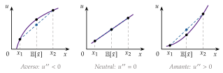
La elasticidad de sustitución intertemporal mide en qué porcentaje cambia el cociente de consumos de 2 periodos, \(c_{t+1}/c_t\), cuando la relación marginal de sustitución entre ellos cambia un 1 % [ver tema 3.A.29]: \[\mathrm{ESI}\equiv\frac{d\,(c_{t+1}/c_t)}{d\,|\mathrm{RMS}|}\cdot\frac{|\mathrm{RMS}|}{c_{t+1}/c_t} .\] Con utilidad separable en el tiempo, \(u(c_t)+\beta\,u(c_{t+1})\), y la CRRA, cuya utilidad marginal es \(u'(c)=c^{-\theta}\): \[|\mathrm{RMS}|=\frac{u'(c_t)}{\beta\,u'(c_{t+1})}=\frac{c_t^{-\theta}}{\beta\,c_{t+1}^{-\theta}}=\frac{1}{\beta}\left(\frac{c_{t+1}}{c_t}\right)^{\theta}\ \Longrightarrow\ \frac{d\,|\mathrm{RMS}|}{d\,(c_{t+1}/c_t)}=\frac{\theta}{\beta}\left(\frac{c_{t+1}}{c_t}\right)^{\theta-1} .\] Sustituyendo en la definición: \[\mathrm{ESI}=\frac{\beta}{\theta}\left(\frac{c_{t+1}}{c_t}\right)^{1-\theta}\cdot\frac{\frac{1}{\beta}\left(c_{t+1}/c_t\right)^{\theta}}{c_{t+1}/c_t}=\frac{1}{\theta} .\] Como \(\theta\) es también la elasticidad de la utilidad marginal cambiada de signo, \(r_R=-\varepsilon_{u'(x),x}=\theta\) (anexo F.2), con utilidad separable en el tiempo la inversa de la elasticidad de sustitución intertemporal y el coeficiente de aversión relativa al riesgo coinciden: las funciones con aversión relativa constante son también las que tienen elasticidad de sustitución intertemporal constante.↩︎
Las preferencias de Epstein y Zin (1989) las separan: la aversión relativa y la elasticidad de sustitución intertemporal son parámetros distintos. El \(-1\) del numerador de (5) no afecta a las decisiones; se mantiene para que el límite cuando \(\theta\to 1\) sea \(\ln x\).↩︎
La media y la varianza son los 2 primeros momentos de la distribución. La utilidad esperada también es sensible a los de orden superior: con \(u'''>0\), el consumidor prefiere asimetría positiva (premios grandes y poco probables), y con \(u''''<0\) rechaza las colas gruesas (la curtosis).↩︎
Con \(u(x)=\ln x\), la utilidad esperada es \((1-\pi)\ln x_1+\pi\ln x_2\): una función Cobb-Douglas en logaritmos, con las probabilidades como exponentes [ver tema 3.A.8].↩︎
Es la análoga de la recta de balance del consumidor con certidumbre [ver tema 3.A.8].↩︎
Del lado de la oferta, la aseguradora puede comportarse como neutral al riesgo porque agrupa muchos riesgos independientes (risk pooling: por la ley de los grandes números, la pérdida media por póliza es casi cierta) y porque reparte cada riesgo entre muchos accionistas o reaseguradores (risk spreading: Arrow y Lind (1970) demuestran que, repartido entre muchos, el coste del riesgo tiende a cero). El reparto óptimo del riesgo entre agentes se estudia en H. Gravelle y Rees (2004) y en el equilibrio general con mercados contingentes [ver tema 3.A.21].↩︎
Harry Markowitz recibió el Premio Nobel de Economía de 1990, con Merton Miller y William Sharpe, «por sus trabajos pioneros en la teoría de la economía financiera» (NobelPrize.org, 1990), pero por su otro artículo de 1952, el de la selección de carteras (anexo E) [ver tema 3.B.23]. Sobre su formación en Chicago, H. M. Markowitz (1990).↩︎
Maurice Allais recibió el Premio Nobel de Economía en 1988 «por sus contribuciones pioneras a la teoría de los mercados y a la utilización eficiente de los recursos» (NobelPrize.org, 1988): no por la paradoja.↩︎
La versión original de Allais, con premios en millones, es el efecto consecuencia común: la mayoría prefiere 1 millón seguro a una lotería que da 5 millones con probabilidad 0,10, 1 millón con 0,89 y nada con 0,01, pero prefiere 5 millones con probabilidad 0,10 a 1 millón con 0,11. En cada par, las 2 loterías comparten un 89 % de probabilidad de ganar 1 millón (primer par) o nada (segundo), y cambiar esa parte común no debería alterar la elección. En Kahneman y Tversky (1979), con premios en libras israelíes, el 82 % eligió el pago seguro en el primer par, el 83 % la lotería arriesgada en el segundo y el 61 % hizo las 2 cosas a la vez. Savage cuenta que, cuando Allais le planteó el ejemplo, eligió como la mayoría y después revisó su elección para ajustarla a sus axiomas (Savage, 1954, cap. 5).↩︎
Thaler recibió el Premio Nobel de Economía en 2017 «por sus contribuciones a la economía del comportamiento» (Kungl. Vetenskapsakademien, 2017).↩︎
Si la utilidad depende del estado, las probabilidades subjetivas no quedan identificadas: \(\pi_s u_s(x)\) puede repartirse de muchas formas entre «creencia» y «utilidad» (Karni, 1985). Por eso la uniformidad entre estados es imprescindible para hablar de probabilidades subjetivas. Hay otras axiomatizaciones, como la de Wakker (1989); difieren en los conjuntos de elección y en los axiomas, pero todas buscan lo mismo: una utilidad que cuantifique los gustos y una probabilidad que cuantifique las creencias (Karni, 2018).↩︎
En la versión de 3 colores, una urna tiene 30 bolas rojas y 60 negras o amarillas en proporción desconocida. La mayoría prefiere apostar a «roja» que a «negra», pero a «negra o amarilla» que a «roja o amarilla»: lo primero exige \(\pi_R>\pi_N\) y lo segundo \(\pi_N+\pi_A>\pi_R+\pi_A\), es decir, \(\pi_N>\pi_R\). Viola el principio de la cosa segura, porque el suceso «amarilla» da lo mismo en los 2 actos de cada par (Ellsberg, 1961).↩︎
Con capacidad convexa, la integral de Choquet es el mínimo de las utilidades esperadas sobre el núcleo de \(\nu\), el conjunto de probabilidades que asignan a cada suceso al menos su capacidad (Schmeidler, 1989). En el ejemplo, el núcleo es justamente el conjunto de proporciones de rojas entre 0,3 y 0,7. No hay que confundir este modelo con la utilidad dependiente del rango de Quiggin (1982), que es para riesgo (II.2).↩︎
El maximin es el criterio de la función de bienestar social de Rawls, que supone una aversión infinita a la incertidumbre tras el velo de la ignorancia, frente a la utilitarista de Harsanyi, que se basa en la utilidad esperada [ver tema 3.A.24].↩︎
Maté García y Pérez Domínguez (2007, pág. 203) lo resumen así: la representación preserva el orden de las preferencias por los axiomas de preorden y de continuidad (carácter ordinal), pero no admite cualquier transformación creciente si se quiere mantener la forma de utilidad esperada, por el axioma de independencia (carácter cardinal).↩︎
El debate de los años 50 confundió las 2 cosas: parecía que von Neumann y Morgenstern devolvían la utilidad cardinal de los marginalistas. Pero las utilidades de Bernoulli no son primitivas en el modelo: se deducen de las preferencias sobre loterías, y no al revés (Machina, 2018).↩︎
En la versión original se tiraba un dado hasta que salía un 6; la de la moneda es de Gabriel Cramer (1728) (Peterson, 2023).↩︎
Bernoulli aplicaba la utilidad a la riqueza total del jugador, incluida la inicial; aquí se supone nula para simplificar.↩︎